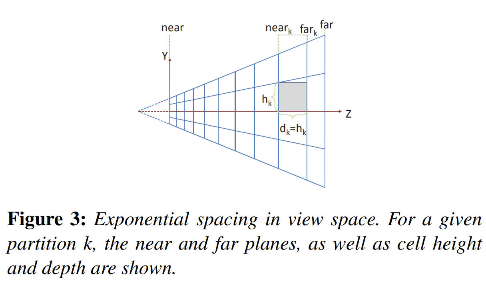
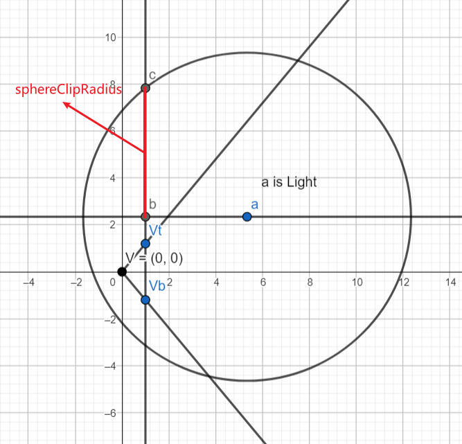
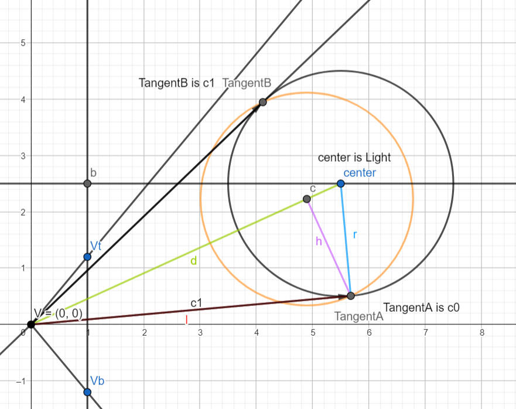
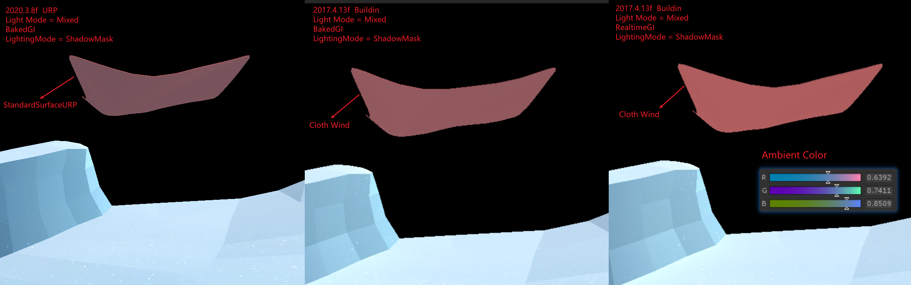
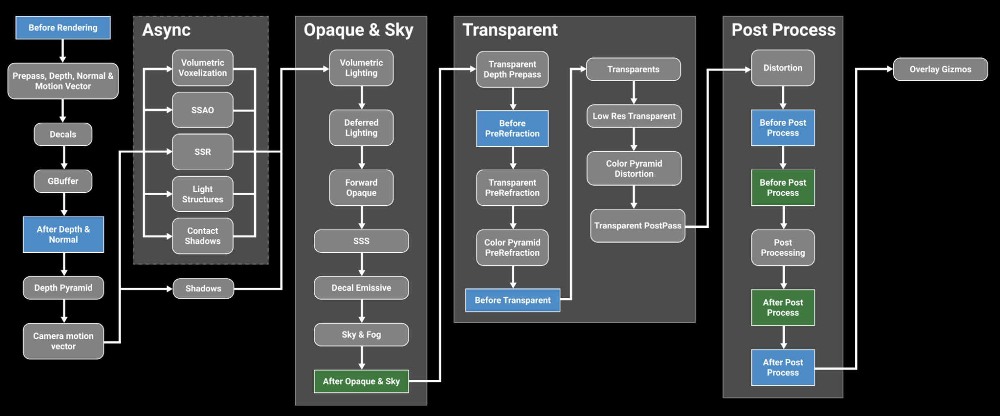

URP
Table of Contents
- CoreRP
- URP
- HDRP
- URP and HDRP Coexistence
- ERROR
- Terminology
- 参考资料
URP note.
<!– more –>
CoreRP
Base
Render Requests
你可以使用 render request 在 Unity 渲染循环外，触发一个相机渲染到一个 render texture. 这些 render request 按照在 script 中的执行顺序被处理，所以不会涉及到回调。
RenderGraph
Render graph fundamentals
Main principles
在使用 RenderGraph API 写 render passes 之前，你需要知道下面一些基本原则：
- 你不再需要直接处理资源了，你需要使用 render graph 系统指定的 handles。所有 RenderGraph APIs 都使用这些 handles 来操作资源。render graph 管理的资源类型有 RTHandles, ComputeBuffers 以及 RendererLists
- 实际的资源引用只可以在一个 render pass 的执行代码（execution code）中被访问
- 该框架要求显示声明 render passes。每个 render pass 必须声明其从哪些资源进行读取，又会写入到哪些资源
- 每次执行 render graph，都不会进行持久化。这意味着在某次执行 render graph 中创建的资源无法传递到下一帧
- 对于哪些需要持久化的资源（例如，从一帧传递给另外一帧的资源），你可以在 render graph 外面创建该资源，然后将其导入到 render graph。在依赖跟踪方面，它们的行为与任何其他 render graph 资源一样，但该 render graph 不处理它们的生命周期。
- render graph 主要使用 RTHandles 作为纹理资源。这对如何编写着色器代码以及如何设置它们有很多影响。
Resource Management
render graph system 使用一帧的 high-level 表示来计算每个资源的生命周期。这意味着当你使用 RenderGraph API 创建一个资源时，render graph 系统此时并不会创建该资源。API 只是返回一个表示该资源的 handle(句柄)，你通过该 handle 来使用所有的 RenderGraph APIs。render graph 只会在第一个 pass 需要写入该资源前创建该资源。这样，创建和分配就可以分离开，创建并不意味着 render graph system 分配资源。相反，这意味着它提供了必要的内存来表示资源，以便它可以在渲染过程中使用该资源。 同理，它也会在最后一次需要读取该资源的 pass 之后释放该资源的内存。这样，render graph sytem 可以根据你在 pass 中声明的内容以最有效的方式重用内存。如果 render graph system 不执行需要指定资源的 pass，则系统不会为该资源分配内存。
Render graph execution overview
render graph 的执行是一个三步过程（设置，编译，执行），每一帧 render graph 都会从头开始。 这是因为 graph 可以在帧与帧之间动态变化，例如，graph 会根据用户的操作而变化。
- Setup
首先，设置所有的 render passes。在这里，你声明所有要执行的 render passes，以及每个 render pass 使用的资源。
- Compilation
其次，编译该 render graph。在该步骤中，render graph system 会剔除无用的 render pass(若 render pass 的输出没有被使用，则该 render pass 是无用的)。这样做可以减少 Setup 的处理工作(在设置 render graph 时不需要处理特殊逻辑了)。debug render passes 就是一个很好的离子。如果你声明了一个 render pass 来生成一些调试话输出，你不需要将其展现到 back buffer，render graph system 会自动剔除该 render pass。
此步骤还会计算资源的生命周期。 这允许 render graph system 以高效的方式创建和释放资源，并可以正确计算同步点，以同步在 async compute pipeline 上执行 passes。
- Execution
最后，执行 render graph。render graph system 按照什么的顺序执行所有未被剔除的 render passes。在每个 render pass 之前，render graph system 会创建合适的资源，并在 render pass 之后释放这些资源(若这些资源不在被后续的 render passes 使用)
RTHandle system
Rendering Debugger
实现 Rendering Debugger 的 Editor 代码在 Packages\com.unity.render-pipelines.core\Editor\Debugging\DebugWindow.cs。可以将自己的扩展嵌入到其中。可以参考 URP 中 DebugDisplaySettingsRendering 的实现。
URP
Base
源码分析
下图为 URP 处理流程：
URP 12.1.6 版本中 ForwardRenderer 变为了 UniversalRenderer
- Unity URP 简要剖析 https://zhuanlan.zhihu.com/p/399297398
源码分析方法
method 1: use urp
查看官方文档，了解 urp 相关的概念，功能。使用 urp 提供的功能。从整体来了解 urp。
method 2: static analysis and editor debugging method
将 com.unity.render-pipelines.core@14.0.7 和 com.unity.render-pipelines.universal@14.0.7 从 Test/Library/PackageCache 目录 copy 到 Test/Packages 目录，方便对 urp 源码进行修改来辅助调试。
在 editor 下对源代码进行调试，结合对 urp 源代码静态分析，来分析 URP 的执行逻辑。
可以使用 Understand 工具来辅助 urp 源代码的静态分析。 Understand 静态代码分析
method 3: app profiling method
首先，编译 Windows 版本进行分析，BuildSettings 设置如下：
Development Build = True
Deep Profiling Support = True
Script Debugging = True
其次，使用 Unity Profiler 工具对 Test.exe 进行 Profiler
在 Timeline 中可以看到一帧中，主线程和渲染线程函数的调用顺序，如下图：

RenderingPath
Forward Rendering Path
前向渲染伪代码如下，可以看出 N 个物体 M 个光源的情况下，运行复杂度为 O(N*M)。光源数量对于计算复杂度影响很大，比较适合光源数量比较少的情况。
For each light:
For each object affected by the light:
framebuffer += object * light
Deferred Rendering Path
For each object:
Render to multiple targets
For each light:
Apply light as a 2D postProcess
- 优点
- 解耦了 Mesh Draw 和 Light Draw，保证物体只被绘制一次，光源也只绘制一次，整体场景 Draw call 复杂度变成了 O(M+N)
- G-Buffer 除了用于直接光照外，还能够被用于一些间接光照的效果，也正是 G-Buffer 概念的提出，使得近十年来越来越多的算法从 World space 向 Screen Space 的演进
- 使得每个着色器都专注于几何参数提取或者照明。这种分离使着色器的功能进行拆分，简化了着色器系统管理。使得 Shader 支持功能更加单一(这是优点也是缺点)
- 只渲染可见的像素，节省计算量
- 解耦了 Mesh Draw 和 Light Draw，保证物体只被绘制一次，光源也只绘制一次，整体场景 Draw call 复杂度变成了 O(M+N)
- 缺点
- 内存开销较大，G-Buffer 是主要元凶
- 需要 MRT 的支持(OpenGL|ES3.0)
- 读写 G-buffer 的内存带宽用量是性能瓶颈。每个光源计算都会去读取 GBuffer
- 对透明物体的渲染存在问题。大多数是在 Deferred 渲染完之后，让透明物体走 Forward 渲染
- 对多重采样抗锯齿(MultiSampling Anti-Aliasing, MSAA)的支持不友好
- 内存开销较大，G-Buffer 是主要元凶
Forward Plus Rendering Path
foreach object in sceen
get depth
foreach tile in screen:
get max min depth
Frustum Intersection test
Generate a list of light
foreach pixel in screen:
foreach light in light_list_of_this_tile:
pixelLighting += light_contribution_to_pixel(light,pixel)
参考资料
- Tile Base Render (Forward+) https://zhuanlan.zhihu.com/p/553907076
- URP12 ClusterRendering 调研 https://zhuanlan.zhihu.com/p/489839605
- Deferred Shading ./UnityCatLikeCoding.html#orgc1c5383
- Deferred Lights ./UnityCatLikeCoding.html#org470faef
Forward Plus
URP12 ClusterRendering
- cluster 排布
- 整体思路
- 所有灯光根据离相机的距离按照从前向后排序
- 将屏幕划分成多个 Tile，计算出每个 Tile 内包含的灯光，使用 Mask 来保存（例如第 3 位为 1 表示第三个灯和 Tile 相交，三这个序号由第一步的排序决定）。一个 Mask 使用一个 uint 表示，如果灯光超出 32 个，则会再多使用对应个数的 uint
- 将相机根据近远裁平面从前往后切分成多个 Bin，每个 Bin 保存和其相交的最近和最远的灯光的序号（也就是会存下来两个值，minIndex 和 maxIndex，分别映射到由第一步得到的排序序号）
- 将第二第三步得到的数据存储到 Constant Buffer 中待之后 GPU 读取
- 光照着色时，首先，会根据当前顶点所在的 Tile 来读出对应的 Mask。其次，根据当前顶点所在 Bin，使用 Bin 的 minIndex 和 maxIndex 对刚刚读取到的 Mask 做一次过滤来得到最终受影响的灯光（例如 Mask 为 10011001，为了简化这里只用了 8 位。而 minIndex 为 4，maxIndex 为 6，这两个值代表的范围为 00111000。将这个范围与 Mask 做一次与运算后得到 00011000，便为最终影响这个顶点的那些灯光，即第 4 和第 5 个灯）。在获取到具体哪个灯后便可以执行正常的光照计算了
- 所有灯光根据离相机的距离按照从前向后排序
- 参考资料
- URP12 ClusterRendering 调研 https://zhuanlan.zhihu.com/p/489839605
- URP12 ClusterRendering 调研 https://zhuanlan.zhihu.com/p/489839605
URP14 ForwardPlus
- 整体思路
- 计算所有灯光的 minZ maxZ
- 将相机根据近远裁平面从前往后切分成多个 Bin
使用 body bitmask 来存储每个 Bin 和所有灯光的相交关系（例如 BodyMask 00011001 表示和第 0，3，4 个灯光相交, 为了简化这里只用了 8 位 mask）
使用 header bitmask 来存储 bin 内所有灯光的 minIndex 和 maxIndex（例如 HeaderMask 01000000 表示 minIndex 为 0，maxIndex 为 4，为了简化这里只是用了 4 位存储 lightIndex） - 将屏幕划分成多个 Tile, 计算每个灯光与 tiles 的相交情况，记录在 tileRanges 中。(为了计算一个灯光和所有 tiles 的相交关系，需要使用 1+tileResolution.y 个 range)
range0 表示 Y 方向上灯光和 tiles 相交的最下面的行号和最上面的行号
range1 表示 X 方向上灯光和第 1 行 tiles 相交的最左边列好和最右边列好
rangeX 表示 X 方向上灯光和第 X 行 tiles 相交的最左边列好和最右边列好 - 将上一步得到的 tileRanges 数据转化为 bitmask 数据，bitmask 数据为每个 tile 和所有灯光的相交关系。
例如：Mask 00101001 表示当前 tile 和第 0，3，5 个灯光相交 - 将第 2 步，第 4 步得到的数据存储到 Constant Buffer 中待之后 GPU 读取
- 光照着色时，根据着色的位置计算出其所在的 tile 和 bin，然后读出 tileMask 和 binMask，两个 mask 做与得出影响当前着色点的灯光。
例如：
binBodyMask=00011001
binHeaderMask=01000000(表示 minLightIndex 为 0，maxLightIndex 为 4，这两个值代表的范围为 00011111) 所以 binHeaderFinalMask=00011111
tileMask=00101001
bitMask & tileMask=00001001 (表示第 0，3 个灯光对当前着色点有影响)
bitMask & tileMask & binHeaderFinalMask = 00001001 (表示最终只有第 0, 3 个灯光对当前着色点有影响)
- 计算所有灯光的 minZ maxZ
- Source Code
下面源码分析使用 14.08 版本的 URP:
使用 unitycatlike\Assets\MyTest\URP_SRP\09_ForwardPlus\09_ForwardPlus-Simple.unity 示例场景
GameView 分辨率设置为 1334, 750 iPhone8 分辨率
Camera nearPlane=0.3 farPlane=1000
- ForwardLight(InitParams initParams)
void CreateForwardPlusBuffers() { // UniversalRenderPipeline.maxZBinWords = 1024*4 这里的word对应的是一个uint的内存大小，一般为32bit // 注意：m_ZBins 存储了多个bin的数据，假设一个bin对应m_ZBins中的elemsPerBin个element // headerLength = 2 // elemsPerBin = headerLength+wordsPerTile // binCount // 假设 n0=1 来简化问题, 此时log2(n0)=0 // binCount = log2(nk) * UniversalRenderPipeline.maxZBinWords/{log2(nk)*(headerLength+wordsPerTile)} // = UniversalRenderPipeline.maxZBinWords/(headerLength+wordsPerTile) m_ZBins = new NativeArray<uint>(UniversalRenderPipeline.maxZBinWords, Allocator.Persistent); m_ZBinsBuffer = new GraphicsBuffer(GraphicsBuffer.Target.Constant, UniversalRenderPipeline.maxZBinWords / 4, UnsafeUtility.SizeOf<float4>()); m_ZBinsBuffer.name = "URP Z-Bin Buffer"; // mobile maxVisibleAdditionalLights 为 32 // non mobile maxVisibleAdditionalLights 为 256 // maxTileWords => (maxVisibleAdditionalLights <= 32 ? 1024 : 4096) * 4; // mobile maxTileWords=1024*4=4096 m_TileMasks = new NativeArray<uint>(UniversalRenderPipeline.maxTileWords, Allocator.Persistent); m_TileMasksBuffer = new GraphicsBuffer(GraphicsBuffer.Target.Constant, UniversalRenderPipeline.maxTileWords / 4, UnsafeUtility.SizeOf<float4>()); m_TileMasksBuffer.name = "URP Tile Buffer"; }
- ForwardLight.PreSetup
- 计算 lightOffset，从列表中剔除掉所有 directional light
所有 directional light 都排在 renderingData.lightData.visibleLights 中的最前面。
m_LightCount = renderingData.lightData.visibleLights.Length; var lightOffset = 0; while (lightOffset < m_LightCount && renderingData.lightData.visibleLights[lightOffset].lightType == LightType.Directional) { lightOffset++; } m_LightCount -= lightOffset; m_DirectionalLightCount = lightOffset;
- 计算 m_TileResolution
tile 为正方形，且 tile 的大小为 2 的 n 次幂，tile 最小为 8*8 pixel。场景灯光个数，以及屏幕分辨率都会影响 tile 的大小。
m_WordsPerTile 为表达一个 tile (或一个 bin，虽然名称中只包含 Tile，实际也用于 bin) 和所有 light 以及 reflectionProbe 的相交关系所需的字数（一个字为 32 位）
m_ActualTileWidth 为一个 tile 的分辨率
m_TileResolution 为 tile 的数量
viewCount VR 平台会有两个 view, 为简化分析，下面代码假定了 viewCount 为 1
// 每个light和reflectonProbe 都会占用一个bit，每个tile都要记录其和所有light、reflectionProbe的相交关系 var itemsPerTile = visibleLights.Length + reflectionProbeCount; m_WordsPerTile = (itemsPerTile + 31) / 32; m_ActualTileWidth = 8 >> 1; // init is m_ActualTileWidth=4 do { m_ActualTileWidth <<= 1; // set m_ActualTileWidth to 8 // 假设 // screenResolution 为(1334, 750 iPhone8分辨率) // 第1次迭代： // m_ActualTileWidth 为 8 // m_TileResolution = (1334+7, 750+7)/8 = (167.625, 94.625) = (167, 94) // 第2次迭代： // m_ActualTileWidth 为 16 // m_TileResolution = (1334+15, 750+15)/16 = (84, 47) m_TileResolution = (screenResolution + m_ActualTileWidth - 1) / m_ActualTileWidth; } // mobile maxVisibleAdditionalLights 为 32 // non mobile maxVisibleAdditionalLights 为 256 // UniversalRenderPipeline.maxTileWords = (maxVisibleAdditionalLights <= 32 ? 1024 : 4096) * 4; // 第 1 次迭代： // 167*94=15698>1024*4=4096 // 第 2 次迭代： // 84*47=3948<4096 while ((m_TileResolution.x * m_TileResolution.y * m_WordsPerTile * viewCount) > UniversalRenderPipeline.maxTileWords);
- 计算 m_ZBinScale, m_ZBinOffset, binCount
binCount 表示在 z 方向上划分的 bin 的个数。
bin 在 z 方向上的尺寸成等比数列。

// 计算 m_WordsPerTile，word 为32bit // 每个light和reflectonProbe 都会占用一个bit，每个tile都要记录其和所有light、reflectionProbe的相交关系 var itemsPerTile = visibleLights.Length + reflectionProbeCount; // itemsPerTile = 0 => m_WordsPerTile = 0 场景中没有light和reflectionProbe // itemsPerTile = 1,2,...32 => m_WordsPerTile = 1 // itemsPerTile = 33,34,...64 => m_WordsPerTile = 2 m_WordsPerTile = (itemsPerTile + 31) / 32; // Use to calculate binIndex = log2(z) * zBinScale + zBinOffset //// UniversalRenderPipeline.maxZBinWords = 4096 //// headerLength = 2 两个 header，一个用于记录 light 相关信息，一个用于记录 reflectionProbe 相关信息 m_ZBinScale = UniversalRenderPipeline.maxZBinWords / ((math.log2(camera.farClipPlane) - math.log2(camera.nearClipPlane)) * (headerLength + m_WordsPerTile)); m_ZBinOffset = -math.log2(camera.nearClipPlane) * m_ZBinScale; // 化简之后 m_binCount = UniversalRenderPipeline.maxZBinWords / (headerLength + m_WordsPerTile) // 假设 m_WordsPerTile = 1 (灯光+reflectionProbe 数量小于32, 只需要 1 word) // 则 m_binCount = 1365 m_binCount = (int)(math.log2(camera.farClipPlane) * m_ZBinScale + m_ZBinOffset);
- 计算 light 对应的 minZ maxZ
对于 point light 只需要将其变换到 camera space，通过 light pos 和 light range 就可以计算出 minX maxZ。
对于 spot light 则复杂一些，TODO。
var itemsPerTile = visibleLights.Length + reflectionProbeCount; // 这里使用的 Allocator.TempJob 类型的内存分配器 var minMaxZs = new NativeArray<float2>(itemsPerTile * viewCount, Allocator.TempJob); var lightMinMaxZJob = new LightMinMaxZJob // IJobFor { worldToViewMatrix = worldToViewMatrix, lights = visibleLights, // GetSubArray(start, length) minMaxZs = minMaxZs.GetSubArray(0, m_LightCount * viewCount) }; // Innerloop batch count of 32 is not special, just a handwavy amount to not have too much scheduling overhead nor too little parallelism. var lightMinMaxZHandle = lightMinMaxZJob.ScheduleParallel(m_LightCount, 32, new JobHandle());
- spot light minZ maxZ https://iquilezles.org/www/articles/diskbbox/diskbbox.htm
- spot light minZ maxZ https://iquilezles.org/www/articles/diskbbox/diskbbox.htm
- 计算 reflectionProbe minZ maxZ
将 ReflectionProbe 对应的 Box 变换到 camera space，遍历 Box 的 8 个顶点，确定 minZ MaxZ
var reflectionProbeMinMaxZJob = new ReflectionProbeMinMaxZJob // IJobFor { worldToViewMatrix = worldToViewMatrix, reflectionProbes = reflectionProbes, minMaxZs = minMaxZs.GetSubArray(m_LightCount * viewCount, reflectionProbeCount * viewCount) }; var reflectionProbeMinMaxZHandle = reflectionProbeMinMaxZJob.ScheduleParallel(reflectionProbeCount, 32, lightMinMaxZHandle);
- Binning
计算 bin 内 lights、refelctionProbes 的 minLightIndex 和 maxLightIndex 记录在 header 中。
计算 bin 和 lights、refelctionProbes 的相交情况，记录在 body 中，使用 bitmask 来存储。
m_ZBins 中元素类型为 uint , 其为 1 个 word
m_ZBins 中多个元素对应一个 bin, 具体来说 headerLength + wordsPerTile 个元素 对应 1 个 bin
header:
headerLength = 2
header 对应两个 uint 元素，这两个元素都被填充为 emptyHeader
header0 用与记录 light 相关数据(header0 记录 该 bin 相交的 lights 中最小的 minLightIndex 和 最大的 maxLightIndex)
header1 用与记录 reflectionProbe 相关数据(header1 记录 该 bin 相交的 reflectionProbes 中最小的 minRPIndex 和 最大的 maxRPIndex)
body:
header 后紧跟的 wordsPerTile 个元素用于记录 bin 和哪些 light 或 refletionProbe 有交集，该信息按照 bitmask 方式存储
例如，若 bin 和第 n 个 light 有交集，则 bodyUint |= 1<<n
// UniversalRenderPipeline.maxZBinWords = 1024*4 m_ZBins = new NativeArray<uint>(UniversalRenderPipeline.maxZBinWords, Allocator.Persistent);
binCount ForwardPlus binCount
wordsPerTile No description for this link
// 每 128 个 Bin 组成一个 Batch // ZBinningJob.batchSize = 128 // zBinningBatchCount = 1365/128=11 var zBinningBatchCount = (m_BinCount + ZBinningJob.batchSize - 1) / ZBinningJob.batchSize; var zBinningJob = new ZBinningJob // IJobFor { // bins 为 NativeArray<uint> bins = m_ZBins, minMaxZs = minMaxZs, zBinScale = m_ZBinScale, zBinOffset = m_ZBinOffset, binCount = binCount, // binCount wordsPerTile = m_WordsPerTile, // wordsPerTile lightCount = m_LightCount, reflectionProbeCount = reflectionProbeCount, batchCount = zBinningBatchCount, // batchCount viewCount = viewCount, isOrthographic = camera.orthographic }; // 每个job 处理一个batch（一个 batch 包含 ZBinningJob.batchSize 个bin） // 划分出的job 数量（即:batchCount） = (binCount + ZBinningJob.batchSize - 1) / ZBinningJob.batchSize var zBinningHandle = zBinningJob.ScheduleParallel(zBinningBatchCount*viewCount, 1, reflectionProbeMinMaxZHandle);
public void Execute(int jobIndex) /* jobIndex -> [0, zBinningBatchCount*viewCount) */ { var batchIndex = jobIndex % batchCount; var viewIndex = jobIndex / batchCount; var binStart = batchSize * batchIndex; var binEnd = math.min(binStart + batchSize, binCount) - 1; var binOffset = viewIndex * binCount; // ushort.MaxValue=2^16-1=0x00FF=65535 编码到低16位 // ushort.MinValue=0 编码到高16位 // emptyHeader = (0x00FF & 0xFFFF) | ((0 & 0xFFFF) << 16)=0x00FF=65535 var emptyHeader = EncodeHeader(ushort.MaxValue, ushort.MinValue); // 遍历当前job对应的所有bins for (var binIndex = binStart; binIndex <= binEnd; binIndex++) { bins[(binOffset + binIndex) * (headerLength + wordsPerTile) + 0] = emptyHeader; bins[(binOffset + binIndex) * (headerLength + wordsPerTile) + 1] = emptyHeader; } // Regarding itemOffset: minMaxZs contains [lights view 0, lights view 1, probes view 0, probes view 1] when // using XR single pass instanced, and otherwise [lights, probes]. So we figure out what the offset is based // on the view count and index. // Fill ZBins for lights. FillZBins(binStart, binEnd, 0, lightCount, 0, viewIndex * lightCount, binOffset); // Fill ZBins for reflection probes. FillZBins(binStart, binEnd, lightCount, lightCount + reflectionProbeCount, 1, lightCount * (viewCount - 1) + viewIndex * reflectionProbeCount, binOffset); } static uint EncodeHeader(uint min, uint max) { return (min & 0xFFFF) | ((max & 0xFFFF) << 16); }
// 假设 light0 [minBinIndex=0, maxBinIndex=2]，light1 [minBinIndex=0, maxBinIndex=3]。当前正在处理bins 0到127。 // 遍历所有light，下面假设body只有4个bit，实际上light和reflectionProbe数量小于32时，应该为32个bit // 处理light0时，tmpBinMin=max(0, 0)=0 tmpBinMax=min(2, 127)=2, 后续会遍历bin 0到2, header 记录[0, 0], body记录(0001) // 处理light1时，tmpBinMin=max(0, 0)=0 tmpBinMax=min(3, 127)=3, 后续会遍历bin 0到3, header记录[0, 0]=>[0, 1], body记录(0001|0010=0011) void FillZBins(int binStart, int binEnd, int itemStart, int itemEnd, int headerIndex, int itemOffset, int binOffset) { // 遍历所有light or reflectionProbe for (var index = itemStart; index < itemEnd; index++) { // 获得 light 对应的 float2(minZ,maxZ) var minMax = minMaxZs[itemOffset + index]; // 由light的minZ maxZ 得到light对应的minBin index 和 maxBin index // 取 [lightBinMin, lightBinMax] 和 [binStart, binEnd] 的交集, 得到 [tmpBinMin, tmpBinMax] var minBin = math.max((int)((isOrthographic ? minMax.x : math.log2(minMax.x)) * zBinScale + zBinOffset), binStart); var maxBin = math.min((int)((isOrthographic ? minMax.y : math.log2(minMax.y)) * zBinScale + zBinOffset), binEnd); // 当 lights 的数量超过32后，bin 和 lights 的 相交信息需要放到多个 word 中 // wordIndex 表示当前 light 的信息放在第几个 word 中 var wordIndex = index / 32; // bitMask 表示当前 light 的信息放在 word 的哪个 bit 中 var bitMask = 1u << (index % 32); // 遍历 tmpBinMin 到 tmpBinMax， // 1: 更新 header 记录的 minLightIndex 和 maxLightIndex // 2: 更新 body 记录的 mask 信息 for (var binIndex = minBin; binIndex <= maxBin; binIndex++) { var baseIndex = (binOffset + binIndex) * (headerLength + wordsPerTile); // 解码出 header 中存储的 minLightIndex 和 maxLightIndex var (minIndex, maxIndex) = DecodeHeader(bins[baseIndex + headerIndex]); // 对 [oldMinLightIndex, oldMaxLightIndex] 进行扩展以包含当前的 lightIndex, 得到 [newMinLightIndex, newMaxLightIndex] minIndex = math.min(minIndex, (uint)index); maxIndex = math.max(maxIndex, (uint)index); // 使用 [newMinLightIndex, newMaxLightIndex] 更新 header bins[baseIndex + headerIndex] = EncodeHeader(minIndex, maxIndex); bins[baseIndex + headerLength + wordIndex] |= bitMask; } } }
- Tiling
计算每个 light 或 reflectionProbe 与 tiles 的相交情况，记录在 tileRanges 中。X方向每一行使用一个 range 记录相交的最左边 tile index 和最右边 tile index，Y 方向使用一个 range 记录相交的最下面 tile index 和最上面 tile index。
从摄像机看 light sphere（point light），得到 light 的边界点(代码中的 horizon point), 将 horizon point 投影到近平面，从而计算出与 tiles 的相交情况。
range 为 InclusiveRange 结构体变量，其中有两个成员 start 和 end。用于存储 light 相交的 tiles 的 start index 和 end index。
Y 方向 range 的 取值范围为 [0, m_TileResolution.y)
X 方向 range 的 取值范围为 [0, m_TileResolution.x)
为每个 light 或 reflectionProbe 记录与所有 tiles 相交情况需要的 range 数量
X 方向一个 range 对应一行 tile，所以需要 m_TileResolution.y 个 range; 在 Y 方向只需要一个 range
存储所有 light 或 reflectionProbe 对应的 range 信息
// short 为int16, 所以InclusiveRange 占用4个字节 struct InclusiveRange { public short start; public short end; // ...... }; // 为了支持VR平台，所以这里的 fovHalfHeights 为两个数 // We want to calculate `fovHalfHeight = tan(fov / 2)` // `projection[1][1]` contains `1 / tan(fov / 2)` var fovHalfHeights = new Fixed2<float>(1.0f/viewToClips[0][1][1], 1.0f/viewToClips[1][1][1]); // Each light needs 1 range for Y, and a range per row. Align to 128-bytes to avoid false sharing. // rangesPerItem 的计算： 每个 light 在Y方向需要一个 range，X方向一个 range 对应一行 tile，所以需要 m_TileResolution.y 个 range // 当前 m_TileResolution = (84, 47), UnsafeUtility.SizeOf<InclusiveRange>()=4 // AlignByteCount(48*4=192, 128)=256 数据按照128位对齐，以避免 cache miss // rangesPerItem = AlignByteCount(48*4=192, 128)/4 = 64 var rangesPerItem = AlignByteCount((1 + m_TileResolution.y) * UnsafeUtility.SizeOf<InclusiveRange>(), 128) / UnsafeUtility.SizeOf<InclusiveRange>(); var tileRanges = new NativeArray<InclusiveRange>(rangesPerItem * itemsPerTile * viewCount, Allocator.TempJob); var tilingJob = new TilingJob { lights = visibleLights, reflectionProbes = reflectionProbes, tileRanges = tileRanges, itemsPerTile = itemsPerTile, rangesPerItem = rangesPerItem, worldToViews = worldToViews, centerOffset = cameraData.xrRendering && cameraData.xr.viewCount > 0 ? 2f * cameraData.xr.ApplyXRViewCenterOffset(math.float2(0.0f, 0.0f)) : float4.zero, tileScale = (float2)screenResolution / m_ActualTileWidth, tileScaleInv = m_ActualTileWidth / (float2)screenResolution, // viewPlaneHalfSize = (tan(fovX/2), tan(fovY/2)) viewPlaneHalfSizes = new Fixed2<float2>(fovHalfHeights[0] * math.float2(cameraData.aspectRatio, 1), fovHalfHeights[1] * math.float2(cameraData.aspectRatio, 1)), viewPlaneHalfSizeInvs = new Fixed2<float2>(math.rcp(fovHalfHeights[0] * math.float2(cameraData.aspectRatio, 1)), math.rcp(fovHalfHeights[1] * math.float2(cameraData.aspectRatio, 1))), tileCount = m_TileResolution, near = camera.nearClipPlane, isOrthographic = camera.orthographic }; // 每个job处理一个 light 或 reflectonProbe // itemsPerTile = visibleLights.Length + reflectionProbeCount; var tileRangeHandle = tilingJob.ScheduleParallel(itemsPerTile * viewCount, 1, reflectionProbeMinMaxZHandle);
public void Execute(int jobIndex) /* jobIndex -> [0, itemsPerTile*viewCount) */ { var index = jobIndex % itemsPerTile; m_ViewIndex = jobIndex / itemsPerTile; m_CenterOffset = m_ViewIndex == 0 ? centerOffset.xy : centerOffset.zw; // m_Offset 指示当前light对应的tileRanges中的起始位置 m_Offset = jobIndex * rangesPerItem; // m_TileYRange 用于存储当前light 在Y方向上的Range // 这里将其初始化为 empty range m_TileYRange = new InclusiveRange(short.MaxValue, short.MinValue); // 遍历当前light或 reflectionProbe 对应的每个range，对其进行初始化 for (var i = 0; i < rangesPerItem; i++) { // 将当前 light 对应的所有 range 初始化为 empty range tileRanges[m_Offset + i] = new InclusiveRange(short.MaxValue, short.MinValue); } if (index < lights.Length) { // 正交摄像机 使用 TileLightOrthographic 进行处理 if (isOrthographic) { TileLightOrthographic(index); } // 透视摄像机 使用 TileLight 进行处理 else { TileLight(index); } } else { TileReflectionProbe(index); } }
下图展示了，sphereClipRadius 的计算。

./URP/forwardPlus-tiling0.ggb
下图展示了，GetSphereHorizon 的计算逻辑。Tips: 当 lightSphere 和近平面相交时，会处理 clipping 逻辑，下图没展示这种特殊情况。

./URP/forwardPlus-tiling1.ggb
// 透视摄像机 使用 TileLight 进行处理 void TileLight(int lightIndex) { var light = lights[lightIndex]; var lightToWorld = (float4x4)light.localToWorldMatrix; var lightPositionVS = math.mul(worldToViews[m_ViewIndex], math.float4(lightToWorld.c3.xyz, 1)).xyz; lightPositionVS.z *= -1; if (lightPositionVS.z >= near) ExpandY(lightPositionVS); var lightDirectionVS = math.normalize(math.mul(worldToViews[m_ViewIndex], math.float4(lightToWorld.c2.xyz, 0)).xyz); lightDirectionVS.z *= -1; var halfAngle = math.radians(light.spotAngle * 0.5f); var range = light.range; var rangesq = square(range); var cosHalfAngle = math.cos(halfAngle); var coneHeight = cosHalfAngle * range; // Radius of circle formed by intersection of sphere and near plane. // Found using Pythagoras with a right triangle formed by three points: // (a) light position // (b) light position projected to near plane // (c) a point on the near plane at a distance `range` from the light position // (i.e. lies both on the sphere and the near plane) // Thus the hypotenuse is formed by (a) and (c) with length `range`, and the known side is formed // by (a) and (b) with length equal to the distance between the near plane and the light position. // The remaining unknown side is formed by (b) and (c) with length equal to the radius of the circle. // m_ClipCircleRadius = sqrt(sq(light.range) - sq(m_Near - m_LightPosition.z)); var sphereClipRadius = math.sqrt(rangesq - square(near - lightPositionVS.z)); // Assumes a point on the sphere, i.e. at distance `range` from the light position. // If spot light, we check the angle between the direction vector from the light position and the light direction vector. // Note that division by range is to normalize the vector, as we know that the resulting vector will have length `range`. bool SpherePointIsValid(float3 p) => light.lightType == LightType.Point || math.dot(math.normalize(p - lightPositionVS), lightDirectionVS) >= cosHalfAngle; // Project light sphere onto YZ plane, find the horizon points, and re-construct view space position of found points. // CalculateSphereYBounds(lightPositionVS, range, near, sphereClipRadius, out var sphereBoundY0, out var sphereBoundY1); GetSphereHorizon(lightPositionVS.yz, range, near, sphereClipRadius, out var sphereBoundYZ0, out var sphereBoundYZ1); var sphereBoundY0 = math.float3(lightPositionVS.x, sphereBoundYZ0); var sphereBoundY1 = math.float3(lightPositionVS.x, sphereBoundYZ1); // 请参考下面 ExpandY 的注释 if (SpherePointIsValid(sphereBoundY0)) ExpandY(sphereBoundY0); if (SpherePointIsValid(sphereBoundY1)) ExpandY(sphereBoundY1); // Project light sphere onto XZ plane, find the horizon points, and re-construct view space position of found points. GetSphereHorizon(lightPositionVS.xz, range, near, sphereClipRadius, out var sphereBoundXZ0, out var sphereBoundXZ1); var sphereBoundX0 = math.float3(sphereBoundXZ0.x, lightPositionVS.y, sphereBoundXZ0.y); var sphereBoundX1 = math.float3(sphereBoundXZ1.x, lightPositionVS.y, sphereBoundXZ1.y); if (SpherePointIsValid(sphereBoundX0)) ExpandY(sphereBoundX0); if (SpherePointIsValid(sphereBoundX1)) ExpandY(sphereBoundX1); if (light.lightType == LightType.Spot) { // ...... } m_TileYRange.Clamp(0, (short)(tileCount.y - 1)); // Plane: // 屏幕被划分为相同大小的 tile，这里的一个 plane 对应 X 方向的一行 tile // 计算 X 方向上每一行tile与light的相交情况 // Calculate tile plane ranges for sphere. for (var planeIndex = m_TileYRange.start + 1; planeIndex <= m_TileYRange.end; planeIndex++) { var planeRange = InclusiveRange.empty; // fovHalfHeights = tan(fov/2) // viewPlaneHalfSizes = fovHalfHeights[0] * math.float2(cameraData.aspectRatio, 1) // Tips: 上面的计算中没有考虑nearPlane的值，所以，这里的 viewPlane 为 z=1 处的 viewPlane。 // planeY 为当前 plane 在Y方向上的位置 (viewPlane最下面为 -viewPlaneHalfSizes.y，最上面为 +viewPlaneHalfSizes.y) var planeY = math.lerp(-viewPlaneHalfSizes[m_ViewIndex].y, viewPlaneHalfSizes[m_ViewIndex].y, planeIndex * tileScaleInv.y); GetSphereYPlaneHorizon(lightPositionVS, range, near, sphereClipRadius, planeY, out var sphereTile0, out var sphereTile1); if (SpherePointIsValid(sphereTile0)) planeRange.Expand((short)math.clamp(ViewToTileSpace(sphereTile0).x, 0, tileCount.x - 1)); if (SpherePointIsValid(sphereTile1)) planeRange.Expand((short)math.clamp(ViewToTileSpace(sphereTile1).x, 0, tileCount.x - 1)); var tileIndex = m_Offset + 1 + planeIndex; tileRanges[tileIndex] = InclusiveRange.Merge(tileRanges[tileIndex], planeRange); tileRanges[tileIndex - 1] = InclusiveRange.Merge(tileRanges[tileIndex - 1], planeRange); } tileRanges[m_Offset] = m_TileYRange; }
// Project onto Z=1, scale and offset into [0, tileCount] float2 ViewToTileSpace(float3 positionVS) { var positionCS = m_CenterOffset + positionVS.xy / positionVS.z * viewPlaneHalfSizeInvs[m_ViewIndex]; return (positionCS * 0.5f + 0.5f) * tileScale; } // 更新 Y range 和 X ranges 记录的数据，从而记录下 light 和 tile 的相交情况 // 这里并不会真正更新 tileRanges 中记录的 Y range，只会更新临时的 m_TileYRange，最后才会利用 m_TileYRange 更新 tileRanges 中记录的 Y range // Expands the tile Y range and the X range in the row containing the position. void ExpandY(float3 positionVS) { // var positionTS = math.clamp(ViewToTileSpace(positionVS), 0, tileCount - 1); var positionTS = ViewToTileSpace(positionVS); var tileY = (int)positionTS.y; var tileX = (int)positionTS.x; // tileCount is m_TileResolution m_TileYRange.Expand((short)math.clamp(tileY, 0, tileCount.y - 1)); if (tileY >= 0 && tileY < tileCount.y && tileX >= 0 && tileX < tileCount.x) { var rowXRange = tileRanges[m_Offset + 1 + tileY]; rowXRange.Expand((short)tileX); // 更新第 tileY 行 tile 对应的 range，使该 range 包含传入的位置 positionVS tileRanges[m_Offset + 1 + tileY] = rowXRange; } }
- TileRangeExpansion
将 Tiling Job 得到的 Ranges 数据转化为 Mask 数据，存储到 m_TileMasks 中。
：
m_TileMasks 的数据类型为 uint 数组, NativeArray<uint> m_TileMasks;
m_TileMasks 中多个元素对应一个 tile 和所有 lights 或 refelctionProbe 的相交情况，具体来说是 wordsPerTile 个元素对应一个 tile
var expansionJob = new TileRangeExpansionJob { tileRanges = tileRanges, tileMasks = m_TileMasks, rangesPerItem = rangesPerItem, itemsPerTile = itemsPerTile, wordsPerTile = m_WordsPerTile, tileResolution = m_TileResolution, }; //每个job处理 一行tiles var tilingHandle = expansionJob.ScheduleParallel(m_TileResolution.y * viewCount, 1, tileRangeHandle);
关于 rangesPerItem: No description for this link
关于 wordsPerTile : No description for this link
// 处理第jobIndex行tiles public void Execute(int jobIndex) { var rowIndex = jobIndex % tileResolution.y; var viewIndex = jobIndex / tileResolution.y; var compactCount = 0; var itemIndices = new NativeArray<short>(itemsPerTile, Allocator.Temp); var itemRanges = new NativeArray<InclusiveRange>(itemsPerTile, Allocator.Temp); // Compact the light ranges for the current row. // 遍历每个 light和reflectionProbe for (var itemIndex = 0; itemIndex < itemsPerTile; itemIndex++) { // rangesPerItem 为记录每个 light 或 reflectionProbe 与所有 tiles 相交情况需要的 range 数量 // range 为当前 light 与 第 rowIndex 行 tiles (也就是当前job处理的行)的相交信息 // 若 range 为空，说明当前 light 与 当前job处理的行 没有相交 var range = tileRanges[viewIndex * rangesPerItem * itemsPerTile + itemIndex * rangesPerItem + 1 + rowIndex]; if (!range.isEmpty) { itemIndices[compactCount] = (short)itemIndex; itemRanges[compactCount] = range; compactCount++; } } // wordsPerTile 为表达一个 tile 和所有 light 以及 reflectionProbe 的相交关系所需的字数（一个字为 32 位） var rowBaseMaskIndex = viewIndex * wordsPerTile * tileResolution.x * tileResolution.y + rowIndex * wordsPerTile * tileResolution.x; // 遍历当前行中的每一个tile for (var tileIndex = 0; tileIndex < tileResolution.x; tileIndex++) { var tileBaseIndex = rowBaseMaskIndex + tileIndex * wordsPerTile; for (var i = 0; i < compactCount; i++) { var itemIndex = (int)itemIndices[i]; var wordIndex = itemIndex / 32; var itemMask = 1u << (itemIndex % 32); var range = itemRanges[i]; if (range.Contains((short)tileIndex)) { tileMasks[tileBaseIndex + wordIndex] |= itemMask; } } } itemIndices.Dispose(); itemRanges.Dispose(); }
- 计算 lightOffset，从列表中剔除掉所有 directional light
- Shader
- Lighting.hlsl
//com.unity.render-pipelines.universal@14.0.8/ShaderLibrary/Lighting.hlsl #if defined(_ADDITIONAL_LIGHTS) uint pixelLightCount = GetAdditionalLightsCount(); #if USE_FORWARD_PLUS for (uint lightIndex = 0; lightIndex < min(URP_FP_DIRECTIONAL_LIGHTS_COUNT, MAX_VISIBLE_LIGHTS); lightIndex++) { FORWARD_PLUS_SUBTRACTIVE_LIGHT_CHECK Light light = GetAdditionalLight(lightIndex, inputData, shadowMask, aoFactor); #ifdef _LIGHT_LAYERS if (IsMatchingLightLayer(light.layerMask, meshRenderingLayers)) #endif { lightingData.additionalLightsColor += LightingPhysicallyBased(brdfData, brdfDataClearCoat, light, inputData.normalWS, inputData.viewDirectionWS, surfaceData.clearCoatMask, specularHighlightsOff); } } #endif // LIGHT_LOOP_BEGIN 这里执行 Forward Plus 光照 LIGHT_LOOP_BEGIN(pixelLightCount) Light light = GetAdditionalLight(lightIndex, inputData, shadowMask, aoFactor); #ifdef _LIGHT_LAYERS if (IsMatchingLightLayer(light.layerMask, meshRenderingLayers)) #endif { lightingData.additionalLightsColor += LightingPhysicallyBased(brdfData, brdfDataClearCoat, light, inputData.normalWS, inputData.viewDirectionWS, surfaceData.clearCoatMask, specularHighlightsOff); } LIGHT_LOOP_END #endif #if defined(_ADDITIONAL_LIGHTS_VERTEX) lightingData.vertexLightingColor += inputData.vertexLighting * brdfData.diffuse; #endif
- RealtimeLights.hlsl
// com.unity.render-pipelines.universal@14.0.8\ShaderLibrary\RealtimeLights.hlsl #if USE_FORWARD_PLUS && defined(LIGHTMAP_ON) && defined(LIGHTMAP_SHADOW_MIXING) #define FORWARD_PLUS_SUBTRACTIVE_LIGHT_CHECK if (_AdditionalLightsColor[lightIndex].a > 0.0h) continue; #else #define FORWARD_PLUS_SUBTRACTIVE_LIGHT_CHECK #endif #if USE_FORWARD_PLUS #define LIGHT_LOOP_BEGIN(lightCount) { \ uint lightIndex; \ ClusterIterator _urp_internal_clusterIterator = ClusterInit(inputData.normalizedScreenSpaceUV, inputData.positionWS, 0); \ [loop] while (ClusterNext(_urp_internal_clusterIterator, lightIndex)) { \ lightIndex += URP_FP_DIRECTIONAL_LIGHTS_COUNT; \ FORWARD_PLUS_SUBTRACTIVE_LIGHT_CHECK #define LIGHT_LOOP_END } } #elif !_USE_WEBGL1_LIGHTS #define LIGHT_LOOP_BEGIN(lightCount) \ for (uint lightIndex = 0u; lightIndex < lightCount; ++lightIndex) { #define LIGHT_LOOP_END } #else // WebGL 1 doesn't support variable for loop conditions #define LIGHT_LOOP_BEGIN(lightCount) \ for (int lightIndex = 0; lightIndex < _WEBGL1_MAX_LIGHTS; ++lightIndex) { \ if (lightIndex >= (int)lightCount) break; #define LIGHT_LOOP_END } #endif
- Clustering.hlsl
// com.unity.render-pipelines.universal@14.0.8/ShaderLibrary/Clustering.hlsl struct ClusterIterator { uint tileOffset; uint zBinOffset; uint tileMask; // Stores the next light index in first 16 bits, and the max light index in the last 16 bits. uint entityIndexNextMax; }; ClusterIterator ClusterInit(float2 normalizedScreenSpaceUV, float3 positionWS, int headerIndex) { ClusterIterator state = (ClusterIterator)0; // ...... } bool ClusterNext(inout ClusterIterator it, out uint entityIndex) { // ...... }
- Lighting.hlsl
- ForwardLight(InitParams initParams)
Native RenderPass
URPAsset
Runtime 修改 URPAsset 设置
using System.Collections; using System.Collections.Generic; using System.Reflection; using UnityEngine; using UnityEngine.Rendering.Universal; public static class UniversalRenderPipelineAssetExtensions { public static T GetRenderFeature<T>(this UniversalRenderPipelineAsset asset, string name) where T : ScriptableRendererFeature { var type = asset.GetType(); var propertyInfo = type.GetField("m_RendererDataList", BindingFlags.Instance | BindingFlags.NonPublic); if (propertyInfo == null) { return null; } var scriptableRenderData = (ScriptableRendererData[])propertyInfo.GetValue(asset); if (scriptableRenderData != null && scriptableRenderData.Length > 0) { foreach (var renderData in scriptableRenderData) { foreach (var rendererFeature in renderData.rendererFeatures) { if (rendererFeature is T && rendererFeature.name == name) { return rendererFeature as T; } } } } return null; } public static T SetRenderFeatureEnable<T>(this UniversalRenderPipelineAsset asset, string name, bool enable) where T : ScriptableRendererFeature { var feature = GetRenderFeature<T>(asset, name); if (feature) feature.SetActive(enable); return feature; } }
void EnableFeature(FeatureTag featureTag, bool isEnable) { var asset = GraphicsSettings.currentRenderPipeline as UniversalRenderPipelineAsset; switch(featureTag) { case FeatureTag.kColorRT: asset.supportsCameraOpaqueTexture = isEnable; break; case FeatureTag.kDepthRT: asset.supportsCameraDepthTexture = isEnable; break; case FeatureTag.kUpdateDepthRT: asset.SetRenderFeatureEnable<CopyDepth>("UpdateDepth", isEnable); break; case FeatureTag.kPlaneReflectionRT: //TODO break; } }
RenderFeature
Disable/Enable RenderFeature Runtime
screenShotRendererFeature.SetActive(enableSSRF);
Custom RenderFeature
template
using UnityEngine; using UnityEngine.Rendering; // old version namespace //using UnityEngine.Rendering.LWRP; using UnityEngine.Rendering.Universal; public class CustomRenderPassFeature : ScriptableRendererFeature { class CustomRenderPass : ScriptableRenderPass { public Mesh Mesh; public Material Material; public CustomRenderPass() { base.profilingSampler = new ProfilingSampler(nameof(CustomRenderPassFeature)); } // This method is called by the renderer before rendering a camera // Override this method if you need to to configure render targets and their clear state, and to create temporary render target textures. // If a render pass doesn't override this method, this render pass renders to the active Camera's render target. // You should never call CommandBuffer.SetRenderTarget. Instead call <c>ConfigureTarget</c> and <c>ConfigureClear</c>. public override void OnCameraSetup(CommandBuffer cmd, ref RenderingData renderingData) { } // This method is called before executing the render pass. // It can be used to configure render targets and their clear state. Also to create temporary render target textures. // When empty this render pass will render to the active camera render target. // You should never call CommandBuffer.SetRenderTarget. Instead call <c>ConfigureTarget</c> and <c>ConfigureClear</c>. // The render pipeline will ensure target setup and clearing happens in an performance manner. public override void Configure(CommandBuffer cmd, RenderTextureDescriptor cameraTextureDescriptor) { } // Here you can implement the rendering logic. // Use <c>ScriptableRenderContext</c> to issue drawing commands or execute command buffers // https://docs.unity3d.com/ScriptReference/Rendering.ScriptableRenderContext.html // You don't have to call ScriptableRenderContext.submit, the render pipeline will call it at specific points in the pipeline. public override void Execute(ScriptableRenderContext context, ref RenderingData renderingData) { CommandBuffer cmd = CommandBufferPool.Get(); using (new ProfilingScope(cmd, base.profilingSampler)) { cmd.DrawMeshInstanced(Mesh, 0, Material, 0, new[] { Matrix4x4.TRS(Vector3.zero, Quaternion.identity, Vector3.one) }); } context.ExecuteCommandBuffer(cmd); CommandBufferPool.Release(cmd); } /// Cleanup any allocated resources that were created during the execution of this render pass. public override void FrameCleanup(CommandBuffer cmd) { } } CustomRenderPass m_ScriptablePass; public override void Create() { Debug.Log("Create"); m_ScriptablePass = new CustomRenderPass(); m_ScriptablePass.Mesh = Resources.Load<Mesh>("Cube123"); m_ScriptablePass.Material = Resources.Load<Material>("TestMaterial123"); // Configures where the render pass should be injected. m_ScriptablePass.renderPassEvent = RenderPassEvent.BeforeRenderingOpaques; } // Here you can inject one or multiple render passes in the renderer. // This method is called when setting up the renderer once per-camera. public override void AddRenderPasses(ScriptableRenderer renderer, ref RenderingData renderingData) { renderer.EnqueuePass(m_ScriptablePass); } }
kawase blur
using System.Collections.Generic; using UnityEngine; using UnityEngine.Rendering; using UnityEngine.Rendering.Universal; public class KawaseBlur : ScriptableRendererFeature { [System.Serializable] public class KawaseBlurSettings { public RenderPassEvent renderPassEvent = RenderPassEvent.AfterRenderingTransparents; public Material blurMaterial = null; [Range(2,15)] public int blurPasses = 1; [Range(1,4)] public int downsample = 1; public bool copyToFramebuffer; public string targetName = "_blurTexture"; } public KawaseBlurSettings settings = new KawaseBlurSettings(); class CustomRenderPass : ScriptableRenderPass { public Material blurMaterial; public int passes; public int downsample; public bool copyToFramebuffer; public string targetName; string profilerTag; int tmpId1; int tmpId2; RenderTargetIdentifier tmpRT1; RenderTargetIdentifier tmpRT2; private RenderTargetIdentifier source { get; set; } public void Setup(RenderTargetIdentifier source) { this.source = source; } public CustomRenderPass(string profilerTag) { this.profilerTag = profilerTag; } public override void Configure(CommandBuffer cmd, RenderTextureDescriptor cameraTextureDescriptor) { var width = cameraTextureDescriptor.width / downsample; var height = cameraTextureDescriptor.height / downsample; tmpId1 = Shader.PropertyToID("tmpBlurRT1"); tmpId2 = Shader.PropertyToID("tmpBlurRT2"); cmd.GetTemporaryRT(tmpId1, width, height, 0, FilterMode.Bilinear, RenderTextureFormat.ARGB32); cmd.GetTemporaryRT(tmpId2, width, height, 0, FilterMode.Bilinear, RenderTextureFormat.ARGB32); tmpRT1 = new RenderTargetIdentifier(tmpId1); tmpRT2 = new RenderTargetIdentifier(tmpId2); ConfigureTarget(tmpRT1); ConfigureTarget(tmpRT2); } public override void Execute(ScriptableRenderContext context, ref RenderingData renderingData) { CommandBuffer cmd = CommandBufferPool.Get(profilerTag); RenderTextureDescriptor opaqueDesc = renderingData.cameraData.cameraTargetDescriptor; opaqueDesc.depthBufferBits = 0; // first pass // cmd.GetTemporaryRT(tmpId1, opaqueDesc, FilterMode.Bilinear); cmd.SetGlobalFloat("_offset", 1.5f); cmd.Blit(source, tmpRT1, blurMaterial); for (var i=1; i<passes-1; i++) { cmd.SetGlobalFloat("_offset", 0.5f + i); cmd.Blit(tmpRT1, tmpRT2, blurMaterial); // pingpong var rttmp = tmpRT1; tmpRT1 = tmpRT2; tmpRT2 = rttmp; } // final pass cmd.SetGlobalFloat("_offset", 0.5f + passes - 1f); if (copyToFramebuffer) { cmd.Blit(tmpRT1, source, blurMaterial); } else { cmd.Blit(tmpRT1, tmpRT2, blurMaterial); cmd.SetGlobalTexture(targetName, tmpRT2); } context.ExecuteCommandBuffer(cmd); cmd.Clear(); CommandBufferPool.Release(cmd); } public override void FrameCleanup(CommandBuffer cmd) { } } CustomRenderPass scriptablePass; public override void Create() { scriptablePass = new CustomRenderPass("KawaseBlur"); scriptablePass.blurMaterial = settings.blurMaterial; scriptablePass.passes = settings.blurPasses; scriptablePass.downsample = settings.downsample; scriptablePass.copyToFramebuffer = settings.copyToFramebuffer; scriptablePass.targetName = settings.targetName; scriptablePass.renderPassEvent = settings.renderPassEvent; } public override void AddRenderPasses(ScriptableRenderer renderer, ref RenderingData renderingData) { var src = renderer.cameraColorTarget; scriptablePass.Setup(src); renderer.EnqueuePass(scriptablePass); } }
Volume Framework
VolumeManager
VolumeManager 中包含两个 VolumeStack，stack 和 m_DefaultStack。
VolumeStack
VolumeStack 用于保存多个 Volume 混合后的参数值。默认情况下，VolumeManager 中有一个全局 VolumeStack，但如果你需要使用特定设置调用 VolumeManger 的 Update 并将结果存储以供以后使用，则可以使用 CreateStack() 创建自己的 VolumeStack。
- defaultParameters 属性：该属性是一个 (VolumeParameter parameter, VolumeParameter defaultValue) 二元组，
- parameter 用于存储 VolumeStack 的 components 中某个 VolumeComponent 对应的某个参数的引用
- defaultValue 用于存储 VolumeManager.defaultVolumeComponent 对应 VolumeComponent 的对应参数的默认值
- VolumeManager Update 开始时，会使用 defaultValue 重置 parameter
- parameter 用于存储 VolumeStack 的 components 中某个 VolumeComponent 对应的某个参数的引用
- components 属性：用于保存多个 Volume 混合后的参数值。
VolumeComponent
VolumeComponent 用于存储某种效果（如 Bloom）的所有参数。
- internal readonly List<VolumeParameter> parameterList; 属性存储了该效果的所有参数列表。
- Override(VolumeComponent state, float interpFactor) 该方法用当前的 VolumeComponent 保存的参数覆盖 state 持有的参数。interpFactor 可以指定当前参数和 state 参数的混合比例, 将混合后的结果参数覆盖为 state 的参数
VolumeParameter
VolumeParameter 用于表示某类参数，例如 Vector3Parameter 为 Vector3 类型的参数。
overrideState 为 False 时，VolumeManager 不会采用该 VolumeParameter 的参数值。因此，对该 VolumeParameter 的修改不会对画面效果产生影响
- overrideState 属性: 用于直接读写 VolumeParameter 的 m_OverrideState 标记
- value 属性: 用于直接读写 VolumeParameter 存储的 m_Value 参数值
- Override 函数: 用于设置 VolumeParameter 存储的参数值，并将 VolumeParameter 的 overrideState 标记为 true
Volume
Volume 是挂在 GameObject 上的 Component。用于定义效果的作用区域，其可以是 Global 类型(作用区域为全局)，也可以是 Local 类型(作用区域通过 Collider 定义)。其持有 VolumeProfile，VolumeProfile 用于 覆盖(Override) VolumeComponent 的默认值。
Volume Inspector 参数
- Mode 参数
用于定义效果的作用区域，它有两种模式
- Global 使得 Volume 没有边界，其可以影响场景中的每个相机
- Local 通过 Collider 指定 Volume 的边界，只有在边界内的摄像机才会受影响
Camera 上可以设置 VolumeTrigger。默认 Volume Trigger 为 null，则以 Camera 自己为 Trigger，即 Camera 进入 Volume 时 Volume 效果对该 Camera 生效。
- Global 使得 Volume 没有边界，其可以影响场景中的每个相机
- Blend Distance 参数
用于指定开始混合的最大距离。0 表示进入 Volume 才开始混合。当 blend distance 大于 0 时，摄像机没进入 Volume 之前就会开始混合，此时摄像机在 Volume 边界外也会受影响，如下图所示：
假设摄像机到 Volume 最近边界的距离为 cam2VDis, cam2VDis 等于 blend distance 时混合权重为 0，cam2VDis 等于 0 时混合权重为 1。这样就可以模拟出 FadeIn FadeOut 的效果。
- Wight 参数
指定 Volume 对场景的影响权重。该值会被乘到混合权重上。
- Priority 参数
指定 Volume 的优先级。VolumeManager 会按照 Volume 的优先级从低到高处理每个 Volume，然后将 Volume 配置的参数混合到 VolumeStack 中，混合算法如下：
// Volume has influence float interpFactor = 1f; if (blendDistSqr > 0f) interpFactor = 1f - (closestDistanceSqr / blendDistSqr); // No need to clamp01 the interpolation factor as it'll always be in [0, 1] range OverrideData(stack, volume.profileRef.components, interpFactor * Mathf.Clamp01(volume.weight));
所以，两个 Volume 有重叠区域时，若高优先级的 volume 的 weight 为 1，则会完全覆盖掉低优先级的 volume。当两个 Volume 优先级相同时，覆盖顺序是没有保证的，其和两个 Volume 的创建顺序有关。
- Profile 参数
指定 VolumeProfile，VolumeProfile 存储了调节后的 VolumeComponent 的参数值。
Volume 实现
Volume 有两个属性：profile 和 sharedProfile, 其 material sharedMaterial 概念类似。调用 profile 会以 sharedProfile 为基础创建新的实例。
VolumeProfile
- components 属性: 存储了所有的 VolumeComponent（VolumeComponent 存储某种效果的所有参数）
Shader
MultiPass
方案 1： shader 中多个 Pass。会打断 SRP Batch。
方案 2： 为同一个物体使用多个材质
Lightmap 烘培
Misc
Upgrade Buildin Shader To URP
Point Light Effect Error
Common
URP 提供了下面工具，实现自动将 Buildin Material 升级为 URP Mateiral。
Edit/Render Pipeline/Universal Render Pipeline/Upgrade Selected Materials to UniversalRP Materials
工具实现在下面文件：
com.unity.render-pipelines.universal@10.5.0\Editor\UniversalRenderPipelineMaterialUpgrader.cs
Unity Buildin 和 URP 支持的 Feature 对比
创建一个 Lit Shader Graph 默认文件，生成的 shader 代码
下面文件是对 Lit Shader Graph 默认文件简化后的 shader 代码。
./URP/urp_lit_shader_graph.shader
shader 的 vert frag 入口函数被定义在 com.unity.render-pipelines.universal/Editor/ShaderGraph/Includes/PBRForwardPass.hlsl 文件中。
PackedVaryings vert(Attributes input) { Varyings output = (Varyings)0; output = BuildVaryings(input); PackedVaryings packedOutput = (PackedVaryings)0; packedOutput = PackVaryings(output); return packedOutput; } half4 frag(PackedVaryings packedInput) : SV_TARGET { Varyings unpacked = UnpackVaryings(packedInput); UNITY_SETUP_INSTANCE_ID(unpacked); UNITY_SETUP_STEREO_EYE_INDEX_POST_VERTEX(unpacked); SurfaceDescriptionInputs surfaceDescriptionInputs = BuildSurfaceDescriptionInputs(unpacked); SurfaceDescription surfaceDescription = SurfaceDescriptionFunction(surfaceDescriptionInputs); #if _ALPHATEST_ON half alpha = surfaceDescription.Alpha; clip(alpha - surfaceDescription.AlphaClipThreshold); #elif _SURFACE_TYPE_TRANSPARENT half alpha = surfaceDescription.Alpha; #els half alpha = 1; #endif InputData inputData; InitializeInputData(unpacked, surfaceDescription, inputData); // TODO: Mip debug modes would require this, open question how to do this on ShaderGraph. //SETUP_DEBUG_TEXTURE_DATA(inputData, unpacked.texCoord1.xy, _MainTex); #ifdef _SPECULAR_SETUP float3 specular = surfaceDescription.Specular; float metallic = 1; #else float3 specular = 0; float metallic = surfaceDescription.Metallic; #endif half3 normalTS = half3(0, 0, 0); #if defined(_NORMALMAP) && defined(_NORMAL_DROPOFF_TS) normalTS = surfaceDescription.NormalTS; #endif SurfaceData surface; surface.albedo = surfaceDescription.BaseColor; surface.metallic = saturate(metallic); surface.specular = specular; surface.smoothness = saturate(surfaceDescription.Smoothness), surface.occlusion = surfaceDescription.Occlusion, surface.emission = surfaceDescription.Emission, surface.alpha = saturate(alpha); surface.normalTS = normalTS; surface.clearCoatMask = 0; surface.clearCoatSmoothness = 1; #ifdef _CLEARCOA surface.clearCoatMask = saturate(surfaceDescription.CoatMask); surface.clearCoatSmoothness = saturate(surfaceDescription.CoatSmoothness); #endif #ifdef _DBUFFER ApplyDecalToSurfaceData(unpacked.positionCS, surface, inputData); #endif half4 color = UniversalFragmentPBR(inputData, surface); color.rgb = MixFog(color.rgb, inputData.fogCoord); return color; }
生成的 shader 代码
URP Buildin GI 比较
下图为图 1

下图为图 2

下图为图 3

下图为图 4

下图为图 5
图 1 中，Buildin 下 BakedGI 和 RealtimeGI 差别为什么很大？
关闭 Mesh 的 LightProbe Blend，后差别几乎没有，说明 BakedGI 和 RealtimeGI 烘培所得的 LightProbe 不同，直接通过 FrameDebug 可以看到球谐系数不同。
LightProbe 数据来自 AmbientColor，场景中方向光，场景中物体反射的光。前两个数据是相同的，所以只能是最后一个数据不同，而图 3 中，Buildin 下 BakedGI 和 RealtimeGI 差别不大，说明 Surface Shader 和 Standard Shader 烘培出来的结果不同。
使用默认的 Surface Shader 进行测试，如图 5，发现 Buildin 下 BakedGI 和 RealtimeGI 差别不大。说明自定义的 Surface Shader 和默认的 Surface Shader 烘培出来的结果不同。
检查自定义的 Surface Shader，发现其中会使用 viewDir，猜测在离线烘焙时，viewDir 的值为（0，0，0），所以导致 Custom Surface Shader MetaPass 返回的 albedo 是错误的。
RenderTarget Load Store 设置
ScriptableRenderer 对 SetRenderTarget 进行了一次封装，通过 ClearFlag 来自动化设置 RT 的 Load Store. 具体来逻辑如下：
// Packages/com.unity.render-pipelines.universal@14.0.8/Runtime/ScriptableRenderer.cs RenderBufferLoadAction colorLoadAction = ((uint)clearFlag & (uint)ClearFlag.Color) != 0 ? RenderBufferLoadAction.DontCare : RenderBufferLoadAction.Load; RenderBufferLoadAction depthLoadAction = ((uint)clearFlag & (uint)ClearFlag.Depth) != 0 ? RenderBufferLoadAction.DontCare : RenderBufferLoadAction.Load;
HDRP
Base
Introduce
高清渲染管线 (HDRP) 是由 Unity 针对现代（与计算着色器兼容的）平台开发的高保真可编程渲染管线 (Scriptable Render Pipeline)。
HDRP 利用基于物理的光照技术、线性光照、HDR 光照和可配置的 Hybrid Tile/Cluster/Deferred/Forward lighting 架构，提供了必要的工具来创建符合高图形标准的游戏、技术 demos、动画等应用。
What problem is HDRP trying to solve?
HDRP 旨在提供统一、一致的光照。这与性能以及最先进的技术息息相关。
统一、一致的光照
HDRP 是基于物理的渲染管线，这意味着你可以使用真实输入来创建场景。例如，灯光的光度以流明或勒克斯表示。
现在，美术师可以独立于上下文创作资源。当上下文改变时，您的视觉效果仍能在项目中保持一致。
性能至上
HDRP 功能在我们当前支持的所有平台上均可提供极高的性能。我们希望您能在不牺牲性能的情况下实现项目的美术愿景。
最先进的技术
HDRP 采用了视频游戏行业的标准技术：基于物理的渲染、物理光单位和基于物理的组件，并提供了用户友好的工具。
Setup
- 安装 HDRP package
- 打开 HDRP 设置向导 Window/Rendering/HDRP Wizard, 如果有设置错误，直接点击 FixAll
源码分析
下图为 HDRP 处理流程：

RP Settings
HDRP Asset
HDRP Asset (High Definition Render Pipeline Asset)控制项目的全局渲染设置，并负责创建 Render Pipeline 实例。类比于 URP Asset(Universal Render Pipeline Asset)。
在 HDRP Asset 中开启某些渲染特性时，unity 才会为对应特性分配内存以及构建 shader variants。所以，可以通过在 HDRP Asset 中关闭某些渲染特性来减少内存占用。只可以在编辑器下，设置 HDRP Asset 中的渲染特性关闭或开启。
运行时，可以通过 Frame Settings 来控制渲染特性开启关闭，但是，若 HDRP Asset 中没有开启某特性，Frame Settings 则无法开启该特性。
HDRP Global Settings
Project Settings/HDRP Global Settings 下可以设置 HDRP Global Settings，其包含如下设置：
- Volume Profiles
- Default Volume Profile Asset 设置默认的 Volume Profile
- LookDev Volume Profile Asset 设置 LookDev 的 Volume Profile
- Default Volume Profile Asset 设置默认的 Volume Profile
- Frame Settings(Default Values) 设置渲染相关的默认值
- Camera
- RealtimeReflection
- Baked or Custom Reflection
- Camera
- Layers Names
- Light Layer Names
- Decal Layer Names
- Light Layer Names
- Miscellaneous
- Shader Stripping
- Resources
- Player Resources
- Ray Tracing Resources
- Editor Resources
- Player Resources
Frame Settings
Frame Settings 是 Cameras 和 Reflection 相关的设置。在 Project Settings/HDRP Global Settings/Frame Settings(Default Values) 中设置 Frame Settings 的默认值。
可以以 Component 的粒度对 Frame Settings 默认值进行 Override。在 Camera Component 上勾选 Rendering/Custom Frame Settings 来 Override。在 ReflectionProbeComponent 上勾选 Capture Settings/Custom Frame Settings 来 Override。
Frame Settings 会影响所有的 Cameras 和 Reflection Probes。所有的 Cameras 和 Reflection Probes 要么使用默认的 FrameSettings, 要么使用 FrameSettings Override。
Shaders and Materials
Shaders
AxF Shader
AxF 是 Apperance eXchange Format 的缩写，AxF 是交换材质外观数据的标准格式。通常情况下，AxF 文件的生成需要使用一个包含实时材料测量功能的工具套件（例如：X-Rite 的 Total Appearance Capture (TAC™) Ecosystem），从中可以生成各种纹理和模型属性。
- AxF 文件是一种用于存储 3D 模型材质的文件格式。它由 X-Rite 开发，并由 Khronos Group 维护。
AxF.shader 位于 com.unity.render-pipelines.high-definition/Runtime/Material/AxF/AxF.shader
Decal
HDRP 中有两种方式来实现 decals
- 使用 Decal Mesh 并手动防止 decal
- 使用 Decal Projector 来投影 decal
Decal.shader 位于 com.unity.render-pipelines.high-definition/Runtime/Material/Decal/Decal.shader
DecalNormalBuffer.shader 位于 com.unity.render-pipelines.high-definition/Runtime/Material/Decal/DecalNormalBuffer.shader
Cotton/Wool Shader
使用 棉花、羊毛 shader 可以创建棉花、羊毛、亚麻或天鹅绒等纤维织物。纤维织物的外观受所用纤维的类型和编织方式影响，天然纤维通常较粗糙，因此会散射光线。
CottonWool shader 是以 Fabric Master Stack 为基础创建的 ShaderGraph。位于 com.unity.render-pipelines.high-definition/Runtime/RenderPipelineResources/ShaderGraph/CottonWool.ShaderGraph
Eye Shader
Eye shader 是以 Eye Master Stack 为基础创建的 ShaderGraph。位于 Packages/com.unity.render-pipelines.high-definition/Runtime/RenderPipelineResources/ShaderGraph/Eye.shadergraph
Fog Volume Shader
DefaultFogVolume shader 是以 Fog Volume Master Stack 为基础创建的 ShaderGraph。位于 Packages/com.unity.render-pipelines.high-definition/Runtime/RenderPipelineResources/ShaderGraph/DefaultFogVolume.shadergraph
Fullscreen Shader
HDRP 实现了 Fullscreen Master Stack, 以此为基础创建的 ShaderGraph 可以作为全屏效果的 shader。
Hair Shader
Hair shader 是以 Hair Master Stack 为基础创建的 ShaderGraph。位于 Packages/com.unity.render-pipelines.high-definition/Runtime/RenderPipelineResources/ShaderGraph/Hair.shadergraph
Layered Lit Shader
Layered Lit Shader 允许你在同一个 GameObject 上堆叠多达 4 个材质。其为每一层使用的都是 Lit Materials。这使得在 HDRP 中创建逼真和多样的材质变得容易。主层是底层，可以通过漫反射、法线和高度影响上层。HDRP 会在主层上方按顺序渲染第一层、第二层和第三层。有关材质、着色器和纹理的信息。
Layered Lit Shader 非常适合用于摄影测量。
摄影测量是使用多个原始实物对象的照片来创建数字资产的过程。摄影测量有不同的用途，工作流程会根据上下文而有所不同。使用摄影测量进行游戏开发，需要考虑游戏开发时间和预算限制。
LayeredLit.shader 位于 com.unity.render-pipelines.high-definition/Runtime/Material/LayeredLit/LayeredLit.shader
Layered Lit Tessellation Shader
Layered Lit Tessellation Shader 允许你在同一个 GameObject 上堆叠多达 4 个材质。其为每一层使用的都是 Lit Tessellation Materials。
LayeredLitTessellation.shader 位于 com.unity.render-pipelines.high-definition/Runtime/Material/LayeredLit/LayeredLitTessellation.shader
Lit Shader
使用 Lit Shader 可以轻松创建逼真的材质。其包含了 Subsurface scattering，Iridescence，Vertex or pixel displacement 等效果，并和 Decal 兼容。
Subsurface scattering: 次表面散射是指光线在材料内部散射。这可以发生在皮肤和眼睛中，并导致它们看起来有光泽和柔软。
Iridescence: 虹彩是指材料在不同角度下显示不同颜色的能力。这可以发生在珍珠和宝石中，并导致它们看起来有光泽和多彩。
Vertex or pixel displacement: 顶点或像素位移是指在表面上创建细微变化的能力。这可以用于创建逼真的纹理和细节。
Decal compatibility: 贴花兼容性是指着色器能够与贴花一起使用。贴花是可以附加到其他对象的 2D 图像。
Lit Tessellation Shader
Silk Shader
Silk Shader 用于渲染各向异性纤维织物。可以使用 Silk shader 来创建丝绸、缎子、尼龙和涤纶等织物。丝绸和其他合成纤维通常比天然纤维更光滑，因为它们是作为单个光滑的细丝制成的。当这些纤维被编织在一起时，会产生具有各向异性镜面高光的织物。
Silk Shader 是以 Fabric Master Stack 为基础创建的 ShaderGraph。位于 com.unity.render-pipelines.high-definition/Runtime/RenderPipelineResources/ShaderGraph/Silk.ShaderGraph
Terrain Lit Shader
Terrain Lit Shader 是 Lit Shader 的简单版本。Terrain Lit Material 可以使用 8 层 Terrain Layers。
Unlit Shader
Material Type
Lit Shader, Lit Tessellation Shader 创建的材质包含了 Material Type 选项，可选类型如下：
- Subsurface Scattering 材质使用次表面散射工作流。次表面散射模拟了光线如何与半透明物体（如皮肤）相互作用并穿透它们。当光线穿透次表面散射材质的表面时，会在另一个点离开表面，光在离开表面之前会散射和模糊。
- Standard 材质使用金属工作流。
- Anisotropy 材质使用各向异性工作流。各向异性表面的亮点会随着您从不同角度查看材质而改变外观。使用此材质类型创建具有各向异性高光的材质。例如，拉丝金属或天鹅绒。
- Iridescence 材质使用彩虹工作流。虹彩表面会随着视角或照明角度的变化而逐渐改变颜色。使用此材质类型创建类似肥皂泡、虹彩金属或昆虫翅膀的材质。
- Specular Color 材质使用镜面颜色工作流。使用此材质类型创建具有有色镜面高光的材质。
- Translucent 材质使用半透明工作流。使用此材质类型和厚度贴图来模拟半透明物体，如植物叶子。与次表面散射材质不同，半透明材质不会模糊通过材质的光线。
下图是 Iridescence、Translucency 以及 Subsurface Scattering 的对比:
Subsurface Scattering
次表面散射处理穿透表面并在表面下方区域内行进的光线。使用次表面散射可以使有机材料（如皮肤）看起来光滑自然，而不是粗糙且类似塑料。HDRP 使用屏幕空间模糊技术实现次表面散射。
次表面散射还处理从背面穿透物体的光线，并使那些物体看起来透明。对于某些类型的对象，屏幕空间模糊效果可能不会产生很大的视觉差异。因此，HDRP 实现了两种材质类型：
- 次表面散射 实现了屏幕空间模糊效果和透射（可以禁用后者）。 次表面散射材质类型适用于需要屏幕空间模糊效果的对象，例如皮肤。
- 半透明仅模拟透射。 半透明材质类型适用于不需要屏幕空间模糊效果的对象，例如植物叶子。
HDRP 将大部分 subsurface scattering 设置都存储在了 Diffusion Profile 中。在一个视角下，HDRP 同时支持多达 15 个自定义的 Diffusion Profile。
Compute Thickness
HDRP 可以使用光路来使透明或不透明的材料在网格内部的较大区域内看起来更致密。这被称为 Compute Thickness(计算厚度)。
Compute Thickness 非常适用于透明材质（透明材质会使用次表面散射或折射，这些效果会使用到 Thickness）。你也可以在平面几何（如草和叶子）上使用它。
Master Stacks
Decal Master Stack
使用 Decal Master Stack 可以创建投影或放置到场景中的贴花。Decal Master Stack 材质类型类似于标准 Decal Shader，但不能使用此版本来创建投影在透明材料上的贴花。
Eye Master Stack
使用 Eye Master Stack 可以实现自定义的基于物理的眼睛材质。它模拟了两层材质，第一层描述了角膜和表面上的液体，第二层描述了通过第一层可见的巩膜和虹膜。它支持各种效果，如角膜折射、焦散(caustics)、瞳孔调节、 角膜缘变黑(limbal darkening) 和 次表面散射。
Corneal refraction: Corneal refraction 是指光线在通过角膜时发生折射。这会导致眼睛看起来明亮而清晰。
Caustics: Caustics 是指光线在表面上发生反射或折射时产生的明亮图案。这可以发生在眼睛的虹膜上，并导致眼睛看起来有光泽。
Pupil dilation: Pupil dilation 是指瞳孔大小的变化。瞳孔会在光线很强时变小，在光线很弱时变大。这可以帮助眼睛调节光线量。
Limbal darkening: Limbal darkening 是指眼睛周围的区域比其他区域更暗。这是一个正常的生理现象，它可以帮助眼睛看起来更真实。
Subsurface scattering: Subsurface scattering 是指光线在材料内部散射。这可以发生在皮肤和眼睛中，并导致它们看起来有光泽和柔软。
Fabric Master Stack
使用 Fabric Master Stack 可以创建各种各类型的纤维织物。其以棉花羊毛或各向异性的丝为基础，并支持各种附加效果如次表面散射来创建真实感纤维织物。
Fog Volume Master Stack
使用 Fog Volume Master Stack 可以创建各种体积烟雾效果。
Fullscreen Master Stack
使用 Fullscreen Master Stack 可以创建各种全屏后处理效果。
Hair Master Stack
使用 Hair Master Stack 可以创建真实的头发和毛。为了创建逼真的头发效果，hair shader 使用了称为 hair cards 的 layers。每个 hair card 表示头发的不同部分。如果你使用半透明的 hair cards，你需要对他们进行手动排序，使得从任意视角这些 hair cards 的排序都是从后到前。
Lit Master Stack
使用 Lit Master Stack 可以渲染各种基于物理的材质。其支持各种效果，例如：次表面散射，各向异性，彩虹色，镜面颜色，以及半透明。
StackLit Master Stack
StackLit Master Stack 可以渲染比 Lit Master Stack 更复杂的材质。它包含 Lit Shader 中所有可用的功能，某些方面甚至提供了更高级或更高质量的版本。例如，它使用更高级的镜面遮蔽形式，并为区域光计算各向异性反射（Lit shader 只为其他类型光源技术各向异性反射）。它还考虑了两个垂直堆叠的物理层之间的光相互作用，以及外观更复杂的通用基层。
Unlit Master Stack
使用 Unlit Master Stack 创建不受光影响的 shader。
Canvas Master Stack
使用 Unlit Master Stack 为 UGUI UI 元素创建 shader。
Lighting
Light
Physical Light Units and Intensities
HDRP 使用物理光照单位 (Plysical Light Units PLU) 进行照明。这些单位基于现实生活中的光照测量，如在灯泡包装或摄影光度计上看到的。注意，当 lights 使用物理光照单位时，为了让其正确工作，需要遵守 HDRP 单位约定（1 个 Unity 单位等于 1 米）。

- Lighting Terms
- Units
单位 使用场景 Lumen PointLight SpotLight AreaLight Candela PointLight SpotLight Lux DirectionalLight PointLight SpotLight Nits AreaLight EV100 PointLight SpotLight AreaLight - Lumen
luminous flux 的单位。luminous flux 表示单位时间的能量，即功率。
- Candela
luminous intensity 的单位。luminous intensity 表示单位立体角的功率。
- Lux (lumen per square meter)
illuminance 的单位。illuminance 表示单位面积的功率。
- Nits (candela per square meter)
luminance 的单位。luminance 表示单位面积单位立体角的功率。
- Exposure value
在摄影中，曝光值（Exposure Value，EV）代表能够给出同样曝光的所有相机光圈快门组合。
EV100 是指在 ISO 100 感光度下，使用 f/1.4 光圈和 1/125 秒快门速度所获得的曝光值。EV100 是标准曝光，也就是说，在光线充足的环境中，使用 EV100 可以获得正常曝光的照片。
曝光值计算公式如下：
EVs = log2(N^2/t)
EV100 计算公式如下：
EV100 = EVs - log2(S/100)
从上面公式可以看出，当 S=100 时，EV100 = EVs
从上面公式可以推导出如下公式：
EVs = EV100 + log2(S/100)
EV100 = EVs - log2(S/100)
EV100 = log2(N^2/t) - log2(S/100)
EV100 = log2((N^2/t) / (S/100)) = log2(N^2/t/100/S)
上面公式就是 Unity HDRP 中 PhysicalCamera.hlsl 中 ComputeEV100 函数计算 EV100 所使用的方法。
变量说明：
- N 是光圈(f 值越小，光圈越大);
- t 是曝光时间(快门)，单位为秒;
- 其中 S 是感光度，即 ISO
HDRP 灯可以使用 EV100，即 ISO 100 胶片的 EV。
- EV & Light(Lux)
在给定照明条件下所采用的 F 值与曝光时间由下式给出:
N^2/t = LS/K
EVs = log2(LS/K)
同样也可以由入射式测光结果计算拍摄参数:
N^2/t = ES/C
EVs = log2(ES/C)
变量说明：
- L 是场景平均辉度(就是平均亮度)
- K 是反射式测光表校正常数
- E 是照度
- C 是入射式测光表校正常数
不同厂商所选用的反射式测光表校正常数之间有微小的差别。一个普遍的选择是 12.5（佳能，尼康和世光）。在感光度 100 时，曝光值与亮度的关系为（推导参考下面给出的链接原文）：
L = 2^(EVs-3)
入射式测光表的情况比反射式测光表要复杂得多，因为校正常数 C 与传感器类型有关。有两种传感器很常见：平面型（余弦响应）和半球型（心形响应）。
用平面型传感器测量照度时，C 的典型值是 250，而照度的单位是勒克斯（lux）。在 C = 250 时，照度与感光度 100 下的曝光值的关系为（推导参考下面给出的链接原文）:
E = 2.5*2^(EVs)
尽管（用平面型传感器）测量得到的照度可以用以指示对于一个平面物体的曝光，这一办法对于通常的场景却不是那么有用，因为这些场景中的许多元素都不是平的，其相对于相机的朝向也各不相同。半球型传感器在测量影像曝光时更为实用。对于半球型传感器，C值通常在 320（美能达）和 340（世光）之间。如果对“照度”的定义不那么严格的话，半球型传感器所测得的结果可以说是指示了“场景照度”。
- EVMeter-理论篇 https://www.emoe.xyz/evmeter-theory/
- L 是场景平均辉度(就是平均亮度)
- 感光度 ISO
- What is ISO?
ISO 是相机对光的敏感度，无论是胶片还是数码传感器。最简单的说法是，它将在使照片变亮或变暗方面发挥作用。ISO 与光圈和快门速度一起构成摄影三个基本支柱。
- Common ISO speeds and what they mean
不同的 ISO 设置以数字表示。这些数字由国际标准化组织 (ISO) 设定（这就是 ISO 表示感光度的由来）。
尽管每台相机都提供不同的 ISO 值范围，但无论型号如何，您都会遇到常见的设置集。通常将最低 ISO 设置称为“base ISO”。以下是从低到高 ISO 的典型标准集：
- 100
- 200
- 400
- 800
- 1600
- 3200
- 6400
注意 ISO 按倍数增加，其直接与亮度级别相关。这意味着 ISO 800 将为照片添加两倍于 ISO 400 的亮度。
- 100
- How does ISO affect my photo?
ISO 越低，传入的光量越少，但图像质量越高。相反，当提高 ISO 时，将获得更多的光线。但是，增加光线太多可能会显示出很多颗粒，也称为“噪点”。
与管理光圈和快门速度一样，设置 ISO 速度始终是保持足够光线而不牺牲质量的微妙平衡。
- What is ISO?
- Exposure compensation
在光照度均匀一致的场合，拍摄该照明下的物体，无论其黑白，达到准确的曝光所用的光圈快门感光度是一样的。
相机的内置测光表测光是测量通过镜头的被摄景物入射光线。你会发现，在均匀一致的照明下，测量黑色物体和测量白色物体，所得曝光值不同。黑色反光少，白色发光多。不要认为相机能辨别物体的反光率，测光表能做的仅是测量被摄物的反射光线量。当看到黑色物体，反光较少，相机会误认为环境照度低，提高曝光；若看到白色物体，相机会认为环境光照度强，需压低曝光。白色还原成中灰是曝光不足，黑色还原成中灰是曝光过度。
为纠正相机的教条主义错误，在对深色暗调物体测光时，需减少曝光；反之则增加曝光。摄影上称之为白加黑减。这就是曝光补偿控件存在的意义。
- 18% Gray
人对世界感知不是线性的而是对数的。这里不是单指光通量，还包括对重量、数量、音量、时间等。
达到准确的曝光的期望是：让曝光正好处于“某种”平衡亮部和暗部的正中间并且尽可能多的记录细节。
50%反射率的灰色在灰阶渐变中几乎偏向白色了，完全不在中间，会导致暗部细节不够。而 18%反射率的灰色，在人眼里正好处于黑白渐变正中间。
在摄影中，通常将中灰色（18% Grey）作为参考标准。如果图像中的中灰色区域看起来正常，则说明曝光是正确的。
如果图像中的中灰色区域看起来过暗，则说明曝光过低。可以通过增加光圈或减小快门速度来提高曝光。
如果图像中的中灰色区域看起来过亮，则说明曝光过高。可以通过减小光圈或增加快门速度来降低曝光。
- 18%灰板的原理是什么？ https://www.zhihu.com/question/19865979
- 18%灰板的原理是什么？ https://www.zhihu.com/question/19865979
- N 是光圈(f 值越小，光圈越大);
- Lumen
- Light intensities
- Natural
不同条件下自然光源的光测量：
Illuminance (lux) Natural light level 120 000 Very bright sunlight. 非常明亮的阳光 110 000 Bright sunlight. 明亮的阳光 20 000 Blue sky at midday. 中午的蓝天 1 000 - 2 000 Overcast sky at midday. 中午阴云密布的天空 < 1 Moonlight with a clear night sky. 晴朗夜空中的月光 0.002 Starry night without moonlight. Includes airglow. 没有月光的繁星之夜。包括大气光 - Artificial
人造光源的近似光测量：
Luminous flux (lumen) Source 12.57 Candle light. 烛光 < 100 Small decorative light, such as a small LED lamp. 小装饰灯，如小型 LED 灯 200 - 300 Decorative lamp, such as a lamp that does not provide the main lighting for a bright room. 装饰灯，例如不是为明亮房间提供主照明的灯 400 - 800 Ceiling lamp for a regular room. 普通房间的吸顶灯 800 - 1 200 Ceiling lamp for a large brightly lit room. 大型明亮房间的吸顶灯 1 000 - 40 000 Bright street light. 明亮的路灯 - Indoor
在设计功能性房间和建筑物时，建筑师使用以下近似值作为参考：
Illuminance (lux) Room type 150 - 300 Bedroom. 卧室 300 - 500 Classroom. 教室 300 - 750 Kitchen. 厨房 300 - 500 Kitchen Counter or Office. 厨房柜台或办公室 100 - 300 Bathroom. 浴室 750 - 1000 Supermarket. 超市 30 City street at night 夜晚的城市街道 - Lighting and exposure diagram
以下备忘单包含了现实世界中常见光源的色温值和光强度。此外还包含不同光照场景的曝光值。

- Natural

Exposure
要使用基于物理的光照和材质，需要正确设置场景曝光。HDRP 包括几种曝光计算方法，适用于大多数使用场景。HDRP 以 EV100 表示其使用的所有曝光值。
HDRP 包含如下几种计算曝光的方法：
- Fixed 你可以手动设置场景曝光
- Automatic 根据屏幕内容自动设置曝光
- Automatic Histogram 使用 Histogram 控制来扩展自动曝光
- Curve Mapping 将当前场景的曝光映射到自定义的曲线
- Use Physical Camera 使用当前的物理摄像机设置来设置场景的曝光
- ConvertEV100ToExposure and GetCurrentExposureMultiplier
无论使用那种算法计算曝光，在写入最终的 _OutputTexture 时，都使用 ConvertEV100ToExposure 来将 EV100 转化为 Exposure（这里 Exposure 并不是 EV 值，而是 1.0/maxLuminance）。 在 Lit.shader 中使用该值来缩放光照计算后的结果。
- ConvertEV100ToExposure
ConvertEV100ToExposure 的计算原理如下，其将 EV100 转化
// exposureScale 为 LensImperfectionExposureScale // float s_LensAttenuation = 0.65f // exposureScale = LensImperfectionExposureScale = (78.0f / (100.0f * s_LensAttenuation)) = 1.2 float ConvertEV100ToExposure(float EV100, float exposureScale) { // Compute the maximum luminance possible with H_sbs sensitivity // maxLum = 78 / ( S * q ) * N^2 / t // = 78 / ( S * q ) * 2^ EV_100 // = 78 / (100 * s_LensAttenuation) * 2^ EV_100 // = exposureScale * 2^ EV // Reference: http://en.wikipedia.org/wiki/Film_speed float maxLuminance = exposureScale * pow(2.0, EV100); return 1.0 / maxLuminance; }
推导可以参考如下内容：
假如我们将 EV100 设置为 14（即晴天正午的标准曝光），则 maxLuminance=1.2*2^14=19660.8 最终得到的 Exposure 为 1/19660.8=5.086*10^-5。
- GetCurrentExposureMultiplier
场景中物体在执行完光照计算后，会应用曝光，Lit.shader 相关处理代码如下：
// Lit.shader LightLoopOutput lightLoopOutput; LightLoop(V, posInput, preLightData, bsdfData, builtinData, featureFlags, lightLoopOutput); float3 diffuseLighting = lightLoopOutput.diffuseLighting; float3 specularLighting = lightLoopOutput.specularLighting; diffuseLighting *= GetCurrentExposureMultiplier(); specularLighting *= GetCurrentExposureMultiplier(); float GetCurrentExposureMultiplier() { #if SHADEROPTIONS_PRE_EXPOSITION // _ProbeExposureScale is a scale used to perform range compression to avoid saturation of the content of the probes. It is 1.0 if we are not rendering probes. return LOAD_TEXTURE2D(_ExposureTexture, int2(0, 0)).x * _ProbeExposureScale; #else return _ProbeExposureScale; #endif }
假设场景灯光为 130000 lux，物体反射率为 18%，则最终应用过曝光后的颜色为 130000*0.18*5.086*10^5 = 0.91548
假设物体反射率为 100%，则最终应用过曝光后的颜色为 130000*5.086*10^5 = 6.6118
- ConvertEV100ToExposure
- Fixed
这是用于计算曝光的最简单，但最不灵活的方法。如果场景具有相对均匀的曝光或想要拍摄静态区域的图像时，它非常有用。还可以使用 local Volumes 在场景中的各种固定曝光值之间进行混合。
// Exposure.compute [numthreads(1,1,1)] void KFixedExposure(uint2 dispatchThreadId : SV_DispatchThreadID) { // ParamEV100 就是Volume 中设置的 FixedExposure值 float ev100 = ParamEV100; // ParamExposureCompensation 就是Volume中设置的 Exposure Compensation 值 ev100 -= ParamExposureCompensation; _OutputTexture[dispatchThreadId] = float2(ConvertEV100ToExposure(ev100, LensImperfectionExposureScale), ev100); }
上面算法写入 _OutputTexture 的值为 1.0/maxLuminance, 在 Lit.shader 中使用该值来缩放光照计算后的结果。
- Automatic
- Automatic
人眼在非常黑暗和非常明亮的区域中都能感知光线。然而，在任何单一时刻，眼睛只能感觉到总体范围的大约百万分之一的对比度。通过调整和重新定义黑色，眼睛可以良好感知多个亮度级别。
Automatic 模式根据屏幕上的亮度级别范围来动态调整曝光。这种调整会逐渐进行，也就是说，当从黑暗的区域中出来时，用户可能会因明亮的室外光线而短暂感到目眩。同样，当从明亮的区域移动到黑暗的区域时，摄像机需要一些时间适应。
下面列出重要的设置选项：
- Target Mid Gray: 设置自动曝光使用的所需中间灰度级（即，自动曝光系统将平均场景亮度映射到的灰度值）。 注意，HDRP 中使用的镜头模型不是完美镜头，因此它无法精确地映射到选定值。
物体的亮度与色彩是由物体对光线的反射率来决定的。例如纯黑色的放射率是 0，纯白色的反射率是 100%，处于中间的灰度的反射率是 18%，这就是 18% 中间灰度。
正确的曝光就是指具有一定反射率的物体在最终的图像中被还原到了其相应的灰度级，如反射率为 18% 的物体，在图像中被还原到了中间灰。
HDRP 中 AutoExposure，的实现在 Exposure.compute 中。分一下三个 Pass：
- kPrePass 读取 ColorRT，计算每个像素的 luminance，再由 luminance 计算 EV100, 最终写入_OutputTexture 的为(EV100, weight)
- kReduction 计算出所有像素加起来平均的 EV100 的中间结果
- kReduction 计算出所有像素加起来平均的 EV100，根据平均 EV100 计算 Exposure(这里 Exposure 是 1/maxLuminance)
[numthreads(8,8,1)] void KPrePass(uint2 dispatchThreadId : SV_DispatchThreadID) { // For XR, interleave single-pass views in a checkerboard pattern UNITY_XR_ASSIGN_VIEW_INDEX((dispatchThreadId.x + dispatchThreadId.y) % _XRViewCount) PositionInputs posInputs = GetPositionInput(float2(dispatchThreadId), rcp(PREPASS_TEX_SIZE), uint2(8u, 8u)); float2 uv = ClampAndScaleUVForBilinear(posInputs.positionNDC); float luma = SampleLuminance(uv); float weight = WeightSample(dispatchThreadId, PREPASS_TEX_SIZE.xx, luma); // MeterCalibrationConstant 为 s_LightMeterCalibrationConstant = 12.5f float logLuma = ComputeEV100FromAvgLuminance(max(luma, 1e-4), MeterCalibrationConstant); // _OutputTexture[posInputs.positionSS] = float2(logLuma, weight); } float ComputeEV100FromAvgLuminance(float avgLuminance, float calibrationConstant) { const float K = calibrationConstant; return log2(avgLuminance * 100.0 / K); }
MeterCalibrationConstant 为 s_LightMeterCalibrationConstant = 12.5f，其为反射式测光表校正常数。包括 ComputeEV100FromAvgLuminance 的计算原理等详细信息可以参考 EV & Light(Lux)
// Automatic float exposure = AdaptExposure(avgLuminance - ParamExposureCompensation); exposure = clamp(exposure, ParamExposureLimitMin, ParamExposureLimitMax); _OutputTexture[groupId.xy] = float2(ConvertEV100ToExposure(exposure, LensImperfectionExposureScale), exposure); break;
- 自动曝光的原理 https://zhuanlan.zhihu.com/p/33462189 有道云备份
- Target Mid Gray: 设置自动曝光使用的所需中间灰度级（即，自动曝光系统将平均场景亮度映射到的灰度值）。 注意，HDRP 中使用的镜头模型不是完美镜头，因此它无法精确地映射到选定值。
- Automatic Histogram
自动直方图 (Automatic Histogram) 是自动模式的扩展。为了获得更稳定的曝光结果，此模式将计算图像的直方图，从而可以从曝光计算中排除图像的某些部分。这可用于丢弃屏幕上极亮或极暗的区域。
曝光直方图是相机对于不同亮度的像素数量分布的直观表现，是判断画面曝光的参考图表。横坐标表示画面的明暗度，从左到右表示纯黑色到纯白色，纵坐标表示不同亮度值的像素数量。
- 相机的曝光直方图 https://baijiahao.baidu.com/s?id=1627800369557192053&wfr=spider&for=pc 有道云备份
- 學習看直方圖（Histogram） 助你判斷準確的曝光 https://www.canon.com.hk/tc/club/article/itemDetail.do?itemId=10322&page=1
下面列出重要的设置选项：
- Histogram Percentages: 使用此字段可选择要用于自动曝光计算的直方图范围。此字段的值为百分数。这意味着，例如，如果将低百分位数设置为 X，在一个像素的强度低于屏幕上所有像素中的 (100-X)% 的情况下，HDRP 将从曝光计算中丢弃该像素。同样，如果将高百分位数设置为 Y，则意味着在一个像素的强度高于 Y% 的情况下，HDRP 会从曝光计算中丢弃该像素。这使得曝光计算可以丢弃阴影和高亮区域中不必要的边缘值。
- Use Curve Remapping: 指定是否在此曝光模式之上应用曲线映射。
- 自动曝光的原理
下面 python 代码展示了基于直方图的自动曝光算法:
import cv2 import numpy as np def auto_exposure(image): """ 基于直方图的自动曝光算法 Args: image: 输入图像 Returns: 曝光后的图像 """ # 计算直方图 hist = cv2.calcHist([image], [0], None, [256], [0, 255]) # 计算平均亮度 mean = hist.sum() / hist.size # 确定曝光值 exposure = 1.0/mean; # 应用曝光值 # pixel = abs(pixel*alpha + beta) return cv2.convertScaleAbs(image, alpha=exposure, beta=0) if __name__ == "__main__": # 加载图像 image = cv2.imread("image.jpg") # 应用自动曝光 exposed_image = auto_exposure(image) # 显示图像 cv2.imshow("Original", image) cv2.imshow("Exposed", exposed_image) cv2.waitKey(0)
HDR 空间下的颜色范围是无限的，我们需要缩小这个范围，毕竟场景屏幕上的颜色大部分都是一个比较”合理的“可控的值。然后对这个颜色值求亮度，量化这个亮度，使它由连续变离散，确定有限采样次数，比如 64 次，这样我们就表示出了柱状图 x 轴的意义。然后，就可以遍历场景屏幕上的每一个像素，计算柱状图的 Y 轴（即，对于 x 轴上的亮度，屏幕上有多少个相关的像素）。
- 【UE4ToUnity】自动曝光 Histogram https://zhuanlan.zhihu.com/p/76416912
- 【UE4ToUnity】自动曝光 Histogram https://zhuanlan.zhihu.com/p/76416912
- 相机的曝光直方图 https://baijiahao.baidu.com/s?id=1627800369557192053&wfr=spider&for=pc 有道云备份
- Metering Mode
Metering Mode 用于设置摄像机如何测量当前的场景曝光。Metering Mode 有如下几个选项：
- Average：摄像机使用整个亮度缓冲区来测量曝光。
- Spot：摄像机仅使用缓冲区的中心来测量曝光。如果只想根据屏幕中央的内容进行曝光，这很有用。
- Center Weighted：摄像机将一个权重应用于缓冲区中的每个像素，然后使用它们来测量曝光。中心的像素具有最大权重，屏幕边界处的像素具有最小权重，而其间的像素越接近屏幕边界，权重将逐渐降低。
- Mask Weighted：摄像机将一个权重应用于缓冲区中的每个像素，然后使用权重来测量曝光。为了指定权重，此方法使用在 Weight Texture Mask 字段中设置的纹理。请注意，如果未提供纹理，此计量模式等效于 Average。
- Procedural Mask：摄像机将一个权重应用于缓冲区中的每个像素，然后使用权重来测量曝光。权重是使用遮罩生成的，而遮罩是采用以下参数由程序生成的：
属性 描述 Center Around Exposure target 程序化遮罩是否将围绕在摄像机中设置为曝光目标 (Exposure Target) 的游戏对象的中心 Center 设置程序化计量遮罩的中心（[0,0] 表示屏幕的左下角，[1,1] 表示屏幕的右上角） 仅当禁用 Center Around Exposure target 时可用 Offset 设置遮罩居中位置的偏移。 仅当启用 Center Around Exposure target 时可用 Radii 以一半屏幕的分数形式（如 0.5 表示在两个方向上拉伸一半屏幕的遮罩）设置程序化遮罩的半径（水平和垂直） Softness 设置遮罩的柔和度。该值越高，对遮罩边缘像素的影响越小 Mask Min Intensity 低于此阈值的所有像素（以 EV100 为单位）将在计量遮罩中被分配权重 0 Mask Max Intensity 高于此阈值的所有像素（以 EV100 为单位）将在计量遮罩中被分配权重 0 - Average：摄像机使用整个亮度缓冲区来测量曝光。
- Automatic
- Curve Mapping
Curve Mapping 模式是 Automatic 模式的变体。可以操纵曲线，而不是设置限制，其中的 X 轴表示当前场景曝光，Y 轴表示所需的曝光。这可让你以更精确和受控的方式一次性为所有光照条件设置曝光。
- Use Physical Camera
此模式主要依赖于摄像机的物理设置 (Physical Settings)
SSGI RTGI
下图是 SSGI 和 RTGI 的对比，RTGI 更加真实一些，SSGI 使得画面整体偏蓝（由于无法获得屏幕外信息，所以使用了天空球颜色）
Reflection and Refraction
Reflection
HDRP 使用如下技术来技术反射：
- Screen space reflections
- Realtime and baked Reflection Probe sampling
- Sky reflection
下面是几种反射技术的对比：
| 反射技术 | 描述 | 性能消耗 |
|---|---|---|
| Screen space reflection | SSR 会利用 screen depth buffer 和 color buffer 计算反射。实时抓取所有物体的反射 | 高 |
| Ray traced reflection | RayTracedReflection 使用 ray tracing 计算反射。实时抓取所有物体的反射 | 高 |
| Realtime Reflection Probe | 手动放置 Reflection Probe。实时抓取所有物体的反射 | 和 Probe 分辨率有关 |
| Baked Reflection Probe | 手动放置 Reflection Probe。在烘培阶段只抓取静态物体的反射 | 低 |
| Sky reflection | 反射材质显示对天空的反射 | 低 |
下图是 Screen space reflection 和 Ray traced reflection 的对比，SSR 迭代 75 次右侧金色金属球无法显示右侧银色金属球，迭代 300 次右侧金色金属球无法显示角色轮廓:
- Screen Space Reflection
SSR 有三种 Tracing Modes：
- RayMarching
- 描述 : 使用屏幕空间的 RayMarching 技术
- limitation : 只有将 RenderingPass 设置为 Before Refraction 时，半透明 Emissive 材质才会被 SSR 计算
- 描述 : 使用屏幕空间的 RayMarching 技术
- RayTracing
- 描述 : 使用 ray traced reflection
- limitation : 半透明 Emissive 材质不会被计算; decal 不会被计算
- 描述 : 使用 ray traced reflection
- Mixed
- 描述 : 将 Ray Marching 和 Ray Tracing 结合起来
- limitation : 只有 Lit shader 选为 Deferred 才可以使用该模式
- 描述 : 将 Ray Marching 和 Ray Tracing 结合起来
- SSR Volume
- RayMarching
PBR Accumulation
World Space Speed Rejection 会导致禁止的物体噪声增大，但是，当摄像机运动时会有时域的混合，可以减低摄像机运动导致的噪声
Speed Rejection Scaler Factor 用于计算 clamp 速度的最大值
Speed Smooth Rejection 速度平滑，开启后可以减少噪声。
Speed Rejection 用于控制基于速度拒绝时域样本的速度阈值, 大于阈值的样本都被拒绝 (该速度阈值是经过归一化的)
Speed From Reflection Surface 表示计算速度时，考虑接收反射的物体的运动速度
Speed From Reflected Surface 表示计算速度时，考虑被反射的物体的运动速度
- 参考资料
- RayMarching
- Mixed tracing
对于屏幕上可见的几何体使用 ray marching 进行求交，对于屏幕外的几何体使用 ray tracing 求交。这样就可以使得反射可以处理屏幕上的不透明粒子，顶点动画，decals。
Tips： 该选项只能再 Performance mode 并且 Lit Shader Mode 被设置为 deferred 时才可以使用。
- RayMarching
- Ray-Traced Reflection
- Reflection hierarchy
为了获得最高质量的反射，HDRP 使用能为每个像素提供最佳精度的反射技术，同时确保它与其他所有技术融合。为此，HDRP 会求解所有照明技术，直到总权重达到 1。
- 屏幕空间反射控制自己的权重。
- 反射探针有一个可以手动编辑的权重属性。这允许你为重叠的反射探针设置权重，以便正确混合它们。
- 天空反射的权重固定为 1。
要为给定像素选择最佳的反射技术，HDRP 会检查可用的技术，并按特定的顺序进行检查，称为反射层次结构。
- 屏幕空间反射控制自己的权重。
Refraction
- Understand Refraction
当光线从一种材质进入另一种材质时，会发射偏折，这种现象就是折射。我们的眼睛只能观察到穿过透明材质的折射现象，光进入不透明材质后大多数都会被吸收。
- How refraction works in HDRP
HDRP 需要得到穿过透明像素所看到的颜色。对于每个透明像素，HDRP 从摄像机位置开始沿着相反的光的方向来计算光的偏折：
- HDRP 获得视角向量，其为进入人眼的光的方向
- 当光进入物体后，HDRP 会对光进行偏折。为了计算光偏折多少以及光在物体内传播多远，HDRP 会根据材质的 Surface Type 设置并使用简单的形状来近似物体内部的体积
- 当光离开物体时，HDRP 会会使用简单的形状来近似物体内部的体积再将光偏折回来
- HDRP 会将光线和 Proxy Volume 进行求交，来获得光穿过透明像素看到的颜色
Tips: 上面提到的使用简单的形状来近似物体内部的体积的技术被称为折射模型(refraction model)
- HDRP 获得视角向量，其为进入人眼的光的方向
- Create a refractive Material
使用 HDRP Lit Shader 创建折射材质:
- Surface Options 部分，将 Rendering Pass 设置为 Default
- Surface Options 部分，将 Surface Type 设置为 Transparent
- Surface Inputs 部分，Base Map 颜色设置时，将 Alpha 设置为小于 1 的值。
- Transparency Inputs 部分，选择 Refraction Model 为 None 以外的选项
- Surface Options 部分，将 Rendering Pass 设置为 Default
- Control refraction
控制折射效果
- 为物体设置近似的形状，从而使得光线偏折更精确
- 设置折射率，从而控制光线偏折的量
- 设置 Transmission Color 和光的吸收
- 设置材质的 smoothness，控制折射的模糊程度
- 添加 Reflection Probe，从而可以精确获得穿过半透明像素看到的颜色
- 使用合适的 Proxy Volume 形状
- 为物体设置近似的形状，从而使得光线偏折更精确
- Other types of refraction
- Recursive Rendering 递归渲染允许每像素包含多个折射表面。
- Path tracing 路径跟踪使用折射率和材料属性创建准确的折射，但通常效率太低不适合实时渲染，因为路径跟踪器会发射真实的光路，不对形状或距离进行近似。
- Recursive Rendering 递归渲染允许每像素包含多个折射表面。
- How refraction works in HDRP
- Refraction models
refraction model 告诉 HDRP 哪种简单的形状最接近物体内部的形状。
- Sphere refraction model
如果物体是实心的凸形（convex shape），则使用球面折射模型。凸形是指表面不平行，向物体中心弯曲的形状。例如，一个圆形的弹珠。
使用该模型，HDRP 为每个表面像素执行如下折射处理：
- 当光进入物体时，HDRP 使用物体表面的 normal 作为计算第一次折射的一部分。这决定了光偏折的多少
- HDRP 使用一个球来近似物体的形状，球的直径决定了光在物体内传播的距离
- 当光离开物体时，HDRP 使用球表面的 normal 作为计算第二次折射的一部分。这决定了光偏折会来的多少
上图以 3 个像素为例展示了 HDRP 如何计算折射光线:
- 橘色的实线表示从摄像机到像素的方向；
- 白色的圆表示使用球来近似物体的厚度;
- 蓝色的实线表示表面的法线；
为了控制球的直径，可以在材质的 Transparency Inputs 部分，修改 Refraction Thickness 或添加一个 Refraction Thickness Map。
为一个球体使用球折射模型，你会在场景中观察到上下倒立的像，产生这种现象的原理如下。光线离开玻璃球时偏折了很多，使得他们相交然后碰到树的相反的一端。
- 当光进入物体时，HDRP 使用物体表面的 normal 作为计算第一次折射的一部分。这决定了光偏折的多少
- Planar refraction model
当物体形状符合如下情况时，使用 Planar refraction model:
- 物体的表面几乎是平行的，如立方体形状的冰块
- 物体是空心的，这意味着实心壁有平行的表面。例如，空心玻璃
你应该为一个空心的球体使用 Planar refraciton model，如气泡
使用该模型，HDRP 为每个表面像素执行如下折射处理：
- 当光进入物体时，HDRP 使用物体表面的 normal 作为计算第一次折射的一部分。这决定了光偏折的多少
- HDRP 使用一个平行平面来近似出射表面（这就是平面投影 plannar projection），物体表面和该平面的距离决定了光在物体内传播的距离
- 当光离开物体时，HDRP 将光线偏折回原来方向
上图以 3 个像素为例展示了 HDRP 如何计算折射光线:
- 橘色的实线表示从摄像机到像素的方向；
- 蓝色的虚线表示平行平面用来近似物体的厚度(白线为平行平面之间的距离，其为物体的厚度);
- 蓝色的实线表示表面的法线；
为了控制平行平面间的距离，可以在材质的 Transparency Inputs 部分，修改 Refraction Thickness 或添加一个 Refraction Thickness Map。将 thickness 设置为物体近似的宽度。宽度越大，折射效果越明显，其原理如下。厚度越大，光的偏移越多，变形越明显。

- 物体的表面几乎是平行的，如立方体形状的冰块
- Thin refraction model
thin refraction model 和 planar refraction model 一样，只是 Refraction Thickness 被固定为 5mm. 无法修改该值。
当使用 Path Tracing Volume 时，你应该为薄的物体使用该 refraction model，其可以提供更好的性能。
- Sphere refraction model
- Screen Space Refraction
Screen Space Refraction 使用 color buffer 或 Reflection Probes 来计算折射效果.
通过 Screen Space Refraction Volume 可以控制 Screen Weight Distance 参数，该参数影响 Screen Space Refraction 对颜色的采样从 color buffer 渐变为 下一级的速度。增大 Screen Weight Distance 可以减少物体上折射颜色之间的缝隙（从 screen color buffer 计算的折射颜色，从 ReflectionProbe 或 Skybox 计算的折射颜色之间会有缝隙）
Recursive rendering
Path tracing
How HDRP calculates color for reflection and refraction
HDRP 计算反射颜色或折射颜色时，会按照一个层级结构来工作。
- Default hierarchy
- 如果光相交的位置在屏幕上，HDRP 使用 color buffer 中的内容（其存储了场景的可见部分）。对于反射来说，需要开启 SSR，才能生效。
- 如果场景中存在 ReflectionProbe，并且物体在 ReflectionProbe 影响范围内，则使用 ReflectionProbe 的 Cubemap
- 如果存在 sky，则使用 sky 的 Cubemap 或 sky 的颜色
- 使用黑色
HDRP 使用的 color buffer 只包含了不透明物体，所以无法通过折射物看到其他折射物
- 如果光相交的位置在屏幕上，HDRP 使用 color buffer 中的内容（其存储了场景的可见部分）。对于反射来说，需要开启 SSR，才能生效。
- Hierarchy if you use ray-traced reflections
如果使用 ray-traced reflections, forward rendering 模式下 HDRP 在 depth prepass 中会将 normal 和 roughness 写入_NormalBufferTexture RT 中, 依据 NormalBufferTexture 中存储信息，以及摄像机方向，发射反射射线以获得被反射物的材质信息和光源信息。然后使用这些信息通过结合 diffuse color 和 specular color 来计算最终的照明。
发生下面情况时，HDRP 只使用 specular color：
- 射线没有碰到任何物体
- 射线弹射次数超过了 SSR 设置的 Bounce Count 值
- Diffuse Color
HDRP 按照如下层级结构来确定 diffuse color：
- 如果场景中存在 Probe Volume, 则使用 Probe Volume 中的照明数据
- 如果该位置存在 baked lightmap, 则使用 lightmap texture
- 如果存在 LightProbe，并且物体在 LightProbe 影响范围内，则使用 LightProbe 的数据
- 如果在 Lighting->Environment->Static Lighting Sky 设置了静态的 sky texture，则使用该 cubemap texture 对应的 ambient probe
- 使用黑色
- 如果场景中存在 Probe Volume, 则使用 Probe Volume 中的照明数据
- Specular Color
HDRP 按照如下层级结构来确定 specular color：
- 如果场景中存在 Reflection Probe 并且物体在 Probe 影响范围内，则使用 ReflectionProbe 对应的 cubemap texture
- 如果存在 sky，则使用 sky 的 Cubemap
- 使用黑色
- 如果场景中存在 Reflection Probe 并且物体在 Probe 影响范围内，则使用 ReflectionProbe 对应的 cubemap texture
- 射线没有碰到任何物体
- Control how Materials use each hierarchy
可以通过 Screen Space Reflection Volume 上的 Minimum Smoothness 来控制层级的选择。
例如，若使用 ray-traced reflection 并将 Minimum Smoothness 设置为 0.9:
- 对于 smoothness 值大于等于 0.9 的区域，将使用 ray-traced reflections hierarchy。
- 对于 smoothness 值小于 0.9 的区域，将使用 specular hierarchy
- 对于 smoothness 值大于等于 0.9 的区域，将使用 ray-traced reflections hierarchy。
- How reflections in reflections work
以下图为例来进行说明：
上面场景所采用的设置为
- 开启 Ray-traced reflections, 并且 Bounce Count 设置为 1
- Minimum Smoothness 设置为 0.9
- 胶囊体为动态物体，smoothness 比较低
- 银色金属球 smoothness 小于 0.9
- 金属金属球 smoothness 大于 0.9
- 小水坑 smoothness 大于 0.9
因为 BounceCount 设置为 1，所以当射线离开第一个物体到达第二个物体后就会停止弹射，即只弹射一次。所以，反射物中反射的物体不会反射出其他物体。HDRP 会降低 hierarchy 去确定第二个物体的颜色。如果该物体的 Smoothness 值比较高，其几乎会使用 specular color 并采用 specular color hierarchy。如果该物体的 Smoothness 值比较低，其几乎会使用 diffuse color 并且采用 diffuse color hierarchy。
- 对于银色金属球，其 smoothness 小于 0.9，所以使用 specular hierarchy。这意味着其使用备用的 Reflection Probe 方案，所以其无法反射出动态的胶囊体
- 在小水坑中，反射出来的金色金属球使用了 fallback 的 specular color hierarchy 和 Reflection Probe，因为该金属球的 smothness 值比较高。所以，反射出来的金色金属球中没有再反射出胶囊体
- 再金属金属球中，反射出来的地面使用了 fallback 的 diffuse color hierarchy 和地面的 lightmap，因为地面的 smoothness 值比较低。
- 再金属金属球中，反射出来的胶囊体使用了 fallback 的 diffuse color hierarchy 和 ambient probe，因为胶囊体的 smoothness 值比较低且没有 lightmap。
- 开启 Ray-traced reflections, 并且 Bounce Count 设置为 1
Environment Lighting
环境照明（Environment Lighting）用于模拟来自场景周围环境的照明。通常使用环境照明来模拟天空照明，但也可以使用它来模拟有色环境光(colored ambient light)或照明棚(lighting studio)。在 HDRP 中，环境照明有两部分：
- 视觉环境(visual environment) 由 Visual Environment Volume override 控制。这控制了你通过相机看到的天空盒，并代表了环境照明的视觉方面。使用内置渲染管道，你可以根据场景自定义视觉环境照明设置。作为对比，HDRP 的 Visual Environment 使用 Volume 框架可以在同一场景中平滑地插值你的天空（和雾）的不同环境照明设置。
- 照明环境(lighting environment)，由 Lighting 窗口的 Environment (HDRP) 部分控制。HDRP 使用照明环境来计算场景的间接环境光。它不使用 Volume 框架，因为 HDRP 的间接环境光目前仅支持一个环境照明源。
本质上，使用视觉环境(visual environment)来控制场景中的天空的外观，使用照明环境(lighting environment)来控制天空如何影响间接环境光。
Visual Environment
Unity 工程的 HDRP Asset 有如下两个属性会影响 Visual Environment：
- Reflection Size：控制 sky cubemap 的分辨率。在未受到 local Reflection Probes 影响的区域，unity 会使用该 cube map 作为备用的 Reflection Probe。
- Lighting Override Mask ： 使用 LayerMask 可以解耦 Camera 看到的天空和天空所影响的 ambient lighting。例如，你想要一个黑暗的天空，但是需要一个更亮的环境光以便依然可以看到东西。
- Visual Environment Volume
通过 Visual Environment Volume 可以控制 Sky、Wind。下面列出设置选项：
- Sky/Sky Type: 设置使用的天空类型，HDRP 有 3 种内置的天空类型
- HDRI Sky
- Gradient Sky
- Physically Based Sky
- HDRI Sky
- Sky/Background Clouds: 设置云的类型
- None: 不渲染任何云
- Cloud Layer:使用 Cloud Layer sytem 渲染云
- None: 不渲染任何云
- Sky/Ambient Mode: 设置 ambient light 的模式。有 Static 和 Dynamic 两种模式
- Static: Ambient light 来自烘培好的天空，该天空通过 Lighting 窗口中 Environment/Static Lighting Sky 的设置。该 ambient light 既影响实时 GI 也影响烘培 GI。
- Dynamic: Ambient light 来自当前 Visual Environment Volume 在 Sky/Sky Type 中设置的天空。该 ambient light 可以实时改变。如果你使用 baked GI，改变 environment lighting 只影响不使用 Ambient Probes 照明的 GameObjects。如果你使用 real-time GI, 改变 environment lighting 会影响 lightmaps 和 Ambient Probes。
- Static: Ambient light 来自烘培好的天空，该天空通过 Lighting 窗口中 Environment/Static Lighting Sky 的设置。该 ambient light 既影响实时 GI 也影响烘培 GI。
- Wind/Global Orientation: 设置风向，相对于世界空间的 x 轴朝向
- Wind/Global Speed: 设置风速，单位为千米/小时
- Sky/Sky Type: 设置使用的天空类型，HDRP 有 3 种内置的天空类型
- HDRI Sky
High-dynamic-range imaging(HDRI) sky 只是使用一个 cubemap 贴图来表示一个简单的天空，使用 HDRI Sky Volume 可以设置 HDRI Sky，例如：可以定义 HDRP 如何更新该 HDRI Sky 生成的间接光照(indirect lighting)。
使用 HDRI Sky：
- 在 Visual Environment Volume 中将 SkyType 选为 HDRI Sky
- 在 HDRI Sky Volume 中开启 HDRI Sky
- 在 Visual Environment Volume 中将 SkyType 选为 HDRI Sky
- Gradient Sky
使用 Gradient Sky Volume 可以 3 种颜色，HDRP 在这三种颜色之间进行插值来创建一个渐变的天空。在运行时，可以修改这 3 种颜色值。
使用 Gradient Sky：
- 在 Visual Environment Volume 中将 SkyType 选为 Gradient Sky
- 在 Gradient Sky Volume 中开启 Gradient Sky
- 在 Visual Environment Volume 中将 SkyType 选为 Gradient Sky
- Physically Based Sky
物理天空（Physically Based Sky）模拟了一个球形的星球，其大气由两部分组成，密度根据高度呈指数递减。这意味着，海平面以上的高度越高，大气越稀薄。
该模拟是预先处理的，这意味着它只运行一次，而不是每帧运行一次。该模拟会评估所有光线和视角的所有大气散射情况，并将结果存储在多个 3D 纹理中，Unity 会在运行时对其进行重新采样。预计算是场景无关的，只取决于物理天空的设置。
物理天空的大气有两种类型的粒子：
- 瑞利散射的空气粒子。
- 具有各向异性米散射的气溶胶粒子。可以使用气溶胶来模拟污染、高度雾或薄雾。
可以使用物理天空来模拟白天和黑夜的天空。运行时更改白天或黑夜不会影响性能。
- Implementation Details
Physically Based Sky 采用了 Precomputed Atmospheric Scattering (Bruneton and Neyret, 2008) 论文所提的方法。
该技术假设你始终从行星表面上方查看场景。这意味着，如果摄像机位于行星表面以下，则天空将照常渲染，就好像摄像机位于地面上一样。行星表面的位置取决于是否启用或禁用球形模式：
- 启用球形模式，则行星半径和行星中心位置属性定义了表面的位置。在此模式下，表面在距离行星中心位置设置的距离处的半径为行星半径。
- 禁用球形模式，则使用海平面属性定义表面的位置。在此模式下，表面在 xz 平面上无限延伸，海平面设置其世界空间高度。
无论哪种模式，默认值都将行星表面设置为场景原点的 y 轴上的 0。由于球形模式的默认值模拟地球，因此半径如此之大，以至于在创建场景环境时，可以将表面视为平坦。如果你希望场景环境的某些区域低于当前的表面高度，则可以垂直偏移场景环境，使最低区域高于 y 轴上的 0，或降低表面高度。要执行此操作：
- 如果处于球形模式，则可以降低行星半径，或将行星中心位置向下移动。
- 如果没有处于球形模式，则降低海平面。
行星不会在深度缓冲区中渲染，这意味着它不会遮挡镜头眩光，也不会在使用运动模糊时正确工作。
- 启用球形模式，则行星半径和行星中心位置属性定义了表面的位置。在此模式下，表面在距离行星中心位置设置的距离处的半径为行星半径。
- Warmup performance impact
当切换到一个 Physically Based Sky 或从一个 Physically Based Sky 切换走时，会导致明显的帧率下降。这是因为 HDRP 需要执行大量的预计算来渲染一个 Physically Based Sky，所以，在开始的一些帧比其他类型的天空会花费更多的时间（依赖于 Number of bounces 参数的设置）。
当使用 Volume 系统在两个不同的 Physically Based Sky 之间插值时，也会导致重新执行预计算。这同样会导致明显的帧率下降。为了避免该问题，应该为场景使用同一组参数的 Physically Based Sky, 通过修改太阳光方向和亮度来达到想要的效果。
当下面这些参数被修改后，会导致 HDRP 重新执行预计算：
- Type
- Planetary Radius
- Ground Tint
- Air Maximum Altitude
- Air Density
- Air Tint
- Aerosol Maximum Altitude
- Aerosol Density
- Aerosol Tint
- Aerosol Anisotropy
- Number of Bounces
- Type
- 瑞利散射的空气粒子。
- Clouds
HDRP 有两种 Cloud 解决方案：
- Cloud Layer
- Volumetric Clouds
可以一起使用两种解决方案。此时，你可以使用 Volumetric Clouds 作为近处的，可交互（接受雾和体积光）的云，使用 Cloud Layer 作为远处的云（其为 skybox 的一部分）
TIPS: Cloud Layer 和 Volumetric Clouds 都不支持 Planet Center Position 设置。
- Cloud Layer
Cloud Layer 是在 sky 之上渲染的 2D 贴图，可以通过使用一个 flowmap 来控制其运动。其还支持在地面上透射阴影。
- About the cloud map
cloud map 是按照 LatLong 布局（有时称为圆柱或等距矩形）的 2D RGBA 贴图，其中每个通道都包含一种云的不透明度。为了渲染，HDRP 使用 Volume override 的四个参数 Opacity R、Opacity G、Opacity B、 Opaticy A 将 cloud map 的四个通道混合在一起。这样就可以使用单个纹理和 Volume framework 来更改云的各个方面。 如果启用“Upper Hemisphere Only”，则 cloud map 将被解释为仅包含 LatLong 纹理的上半部分。这意味着云只会覆盖地平线以上的天空。
默认情况下，HDRP 使用名为 DefaultCloudMap 的 cloud map。 此纹理红色通道表示积云(cumulus clouds)、绿色通道表示层云(stratus clouds)、蓝色通道表示卷云(cirrus clouds)、Alpha 通道表示稀疏云(wispy clouds)。
注意：此 cloud map 的格式与 Volumetric Clouds 使用的 cloud map 不同。
- About the cloud map
- Volumetric Clouds
Volumetric Clouds 为可交互的云，其可以渲染阴影，可接受雾和体积光。HDRP 使用如下资源来生成和渲染体积云：
- a cloud lookup table: 定义高度（altidude）、密度、以及光照属性
- a cloud volume: 定义 HDRP 在场景中生成体积云的区域
- a cloud map: 从顶部俯视场景，其定义了云体积（cloud volume）中，哪些区域有云
使用这三种资源，HDRP 执行如下两个过程来生成体积云：
- Shaping: HDRP 使用大比例缩放后的噪声来创造云的形状
- Erosion: 在第一步的基础上，HDRP 使用小比例缩放后的噪声为来云的边缘添加局部细节
- Cloud map and cloud lookup table
cloud map 和 cloud LUT 贴图定义了体积云的形状和外观。这两种纹理都是 channel-packed 的（按通道打包的），其中每个通道都包含具有特定用途的独立的灰度纹理。这两个纹理对于创作来说并不简单，因此如果项目需要非常特定的云最好仅将 Cloud Control 设置为 Manual，你也可以使用工具辅助来生成这两种纹理。
对于 cloud map，颜色通道表示内容如下：
- 红色：覆盖范围。 指定纹理上云的密度。
- 接近 0 的值表示受噪声影响较小的云区域。
- 接近 1 的值表示受噪声影响更大的云区域。
- 接近 0 的值表示受噪声影响较小的云区域。
- 绿色：雨。 指定云中较亮/较暗的区域。
- 接近 0 的值表示降雨较少且颜色较浅的云区域。
- 接近 1 的值表示降雨较多且颜色较深的云区域。
- 接近 0 的值表示降雨较少且颜色较浅的云区域。
- 蓝色：类型。 沿着 cloud LUT(云查找表)的水平轴进行映射，以指定的纹素表示世界位置处的云属性。
对于 Cloud LUT，颜色通道代表：
- 红色：配置文件覆盖范围。 根据云体积内云的高度确定云的密度。
- 绿色：侵蚀和塑造。 确定云体积的哪些区域更容易受到侵蚀和塑造。 值接近 1 意味着云更容易受到侵蚀和塑造。
- 蓝色：环境光遮挡。 HDRP 在计算体积云的光照时应用于 ambient probe(环境探针)的乘数。
导入这两个贴图纹理时，要禁用 sRGB。 为了获得最佳效果，请勿使用任何压缩。
注意：此 cloud map 的格式与 Cloud Layer 功能使用的 cloud map 不同。
- 红色：覆盖范围。 指定纹理上云的密度。
- Limitations
- Volumetric clouds 和 Before Refraction renderer queue 中的半透明物体行为和限制类似
- 默认情况下，出于性能考虑，Planar Reflection Probes 和 realtime Reflection Probes 不会渲染 Volumetric Clouds
- 当为 Reflection Probes 开启 Volumetric clouds 后，为了性能，会以低分辨率渲染 Volumetric clouds，并且不包含任何时域累积
- 默认情况下，Baked Reflection Probes 会以全分辨率渲染 Volumetric clouds，当不包含任何时域累积
- ray-traced 效果不会考虑 Volumetric clouds
- 透射比（Transmittance）不会以线性的方式应用到 camera 颜色，以提供一个更好和太阳光(或其他高亮度的像素)的混合。若 camera 开启了 MSAA，由于内部限制，会使用不同的混合配置，其可能会导致云的边缘更黑一些
- Volumetric clouds 和 Before Refraction renderer queue 中的半透明物体行为和限制类似
- a cloud lookup table: 定义高度（altidude）、密度、以及光照属性
- Cloud Layer
Lighting Environment
HDRP 使用照明环境(Lighting Environment)来计算场景的间接环境光。
Window/Rendering/Lighting 打开 Lighting 窗口，在 Environment 的选项下，可以对 Lighting Environment 相关的设置进行修改。Lighting Environment 相关的设置如下：
- Profile: 用于 Sky 的 Volume Profile。该 Volume Profile 必须包含至少一个 Sky Volume override。该 Volume Profile 和场景种的主要方向光的交互作用会影响最终烘培的光的显示效果
- Static Lighting Sky: 间接环境光模拟所使用的天空。下拉框种只包含，Volume Profile 中所包含的 sky type。例如，若 Volume Profile 中包含一个 Gradient Sky Volume override, 则你可以在该下拉框中选择 Gradient Sky
- Static Lighting Background Clouds: 间接环境光模拟所使用的背景云。下拉框种只包含，Volume Profile 中所包含的 cloud type。
- Static Lighting Volumetric Clouds: 开启此选项时，在间接环境光模拟中会包含 Volumetric Clouds
你可以为 Lighting Environment 和场景使用相同的 Volume Profile。这样 baked lighting 和 场景可视化背景会使用相同的 sky settings，baked lighting 就会精确匹配运行时的场景可视化背景。若你想分开控制照明环境(Lighting Environment)的 light baking 和场景的可视化背景, 你可以为 Lighting Environment 和场景使用不同的 Volume Profile。
- Decoupling the visual environment from the lighting environment
在 Unity 工程的 HDRP Asset 中可以使用 Lighting/Sky/Lighting Override Mask 选项来将 Lighting Environment 和 Visual Environment 分离开。
如果将 Lighting Override Mask 设置为 Nothing，或一组没有 Volume 的 Layers，则没有 Layers 充当 override。这意味着环境照明(environment lighting)来自影响摄像机的所有 Volume。如果将 Lighting Override Mask 设置为包含具有 Volume 的 Layers，则 HDRP 仅使用这些 Layers 上的 Volume 来计算环境照明(environment lighting)。
以下是将天空照明与视觉天空分离，并为每个使用不同 Volume 配置文件的一个示例：
当你使用包含太阳的 HDRI 天空时。要使太阳在应用程序中实时可见，你的天空背景必须显示具有太阳的 HDRI 天空。要实现来自太阳的实时光照，你必须在场景中使用定向光，并在烘焙过程中使用与第一个相同但不包含太阳的 HDRI 天空。如果你使用包含太阳的 HDRI 天空来烘焙光照，则太阳会两次（一次来自定向光，一次来自烘焙过程）影响光照，并使光照看起来不真实。
- Ambient Light Probe
HDRP 将 Ambient Light Probe 作为 indirect diffuse lighting 的最终备选。其会影响下面内容：
- 若场景没有计算 indirect ambient light（当 unity 没有为该场景计算任何 lightmaps 或 LightProbes）, 则影响所有 Mesh Renderers
- 影响 Light Probe Mode 设置为 Off 的 Mesh Renderers
- 若 Volumetric Clouds Volume 的 Lighting/Ambient Light Probe dimmer 的值大于 0，则影响 Volumetric Fog
Ambient Light Probe 可以是静态的（根据 Lighting 窗口中 Environment/Static Lighting Sky 的设置生成）也可以是动态的（更具当前 Lighting Environment/Profile 中使用的 sky 动态更新）。在 Lighting 窗口中 Environment/Profile 对于的 Volume 配置文件中，将 Sky/Ambient Mode 修改为 Dynamic。Ambient Light Probe 就会在运行时随当前 Lighting Environment/Profile 中使用的 sky 动态更新。
- 若场景没有计算 indirect ambient light（当 unity 没有为该场景计算任何 lightmaps 或 LightProbes）, 则影响所有 Mesh Renderers
- Ambient Reflection Probe
HDRP 将 Ambient Reflection Probe 作为 indirect specular lighting 的最终备选。其只会影响 local Reflection Probes，SSR 以及 Raytraced Reflections 影响不到的区域。
- Reflection Probe
Reflection Probe 和 Cameras 的工作方式相同，他们都使用 Volume system，在 Visual Environment Volume 的设置会影响到 Reflection Probes 和 Cameras，渲染 Reflection Probe 和 Cameras 都会使用来自 sky 的 environment lighting。
Volumetric Lighting
HDRP 包含了一个 volumetric lighting system，使用其可渲染 Volumetric Fog。HDRP 还实现了一个统一的 lighting system，所有的场景组件（如，Lights，不透明和半透明的 GameObjects）都可以和雾进行交互，使得雾看起来有体积感。
Enabling Volumetric Lighting
- HDRP Asset 中，Lighting 部分，开启 Volumetric Fog 和 Volumetric Clouds
- HDRP Global Settings 中，Frame Settings/Camera(Reltime Reflection or Baked-Custom Reflection)/Lighting，开启 Fog 和 Volumetrics
Fog
HDRP 实现由指数雾组件组成的多层雾，其密度随着距摄像机的距离和高度呈指数变化。HDRP 允许你向该指数雾添加可选的体积组件，以真实地模拟灯光和雾的交互，可以对辉光(glow)和黄昏光线进行物理上合理的渲染，这些光线是从中心点（如太阳）穿过云和树木等物体间隙的光束。
- Atmospheric Scattering
当悬浮在大气中的颗粒将穿过它们的一部分光向各个方向扩散（或散射）时，就会发生大气散射。
引起大气散射的自然效应包括雾、云或薄雾。
HDRP 通过将颜色叠加到对象上来模拟雾效果，具体取决于对象与相机的距离。 这非常适合模拟室外环境中的雾气或薄雾。 你可以使用它来隐藏远处游戏对象的剪裁，如果你减少相机的远剪裁平面以增强性能，这将非常有用。
HDRP 实现指数雾，其中密度随着距摄像机的距离呈指数变化。 所有材质类型（点亮或未点亮）都能对雾做出正确反应。 HDRP 根据距摄像机的距离和世界空间高度计算雾密度。
雾可以使用背景天空作为颜色源，而不是使用恒定的颜色。 在这种情况下，HDRP 从当前天空设置生成的立方体贴图的不同 mipmap 中采样颜色。 所选 mip 在最低分辨率和最高分辨率 mipmap 之间线性变化，具体取决于距相机的距离以及雾组件的 Mip Fog 属性中的值。 还可以限制 HDRP 使用的最高 mip 的分辨率。 这样做会增加雾的体积效果，并且比实际的体积雾消耗更少的资源。
或者，可以为靠近相机的游戏对象启用体积雾。 其可以真实地模拟了光与雾的相互作用，从而可以对辉光和黄昏光线进行物理上合理的渲染，这些光线是从中心点（如太阳）穿过云和树木等物体间隙的光束。
- Global Fog
Global Volumetric fog 比 Local Volumetric Fog 有更好的性能和质量。Global fog 是一个高度雾，其有几个重要的属性：
- Base Height:
- 到摄像机的距离小于 Base Height 的区域，其雾浓度为一个常数（这个区域内的雾无变化）
- 到摄像机的距离大于 Base Height 的区域，其雾浓度按照指数衰减
- 到摄像机的距离小于 Base Height 的区域，其雾浓度为一个常数（这个区域内的雾无变化）
- Fog Attenuation Distance: 控制全局的雾的基础浓度，决定了能透过雾看到多远（以米为单位）。在此距离处，雾吸收并散射了 63% 的背景光。
- Maximum Height: 控制雾浓度按照高度的衰减；从而可以在靠近地面的地方有很高的浓度，高度越高浓度越低
- Max Fog Distance: 控制将雾应用到天空盒或背景时的距离（以米为单位）。 也决定了距离雾(Distant Fog)的范围。为了获得最佳结果，将其设置为大于相机剪裁平面的远值。 否则，场景的游戏对象和天空盒上的雾之间会出现差异。 请注意，相机的远剪裁平面是平坦的，而 HDRP 在相机周围的球体内应用雾。
- Base Height:
- Local Volumetric Fog
- Limitations
为了改进性能，HDRP 沿着摄像机焦轴（focal axis）将 Local Volumetric Fog 体素化为 64 或 128 个切片。这导致了如下一些限制：
- Local Volumetric Fog 无法支持体积阴影（volumetric shadowing）. 如果你将 Local Volumetric Fog 放置到一个 Light 和一个表面之间，Local Fog Volume 不会减弱到达表面的光的亮度。
- 在 Local Fog Volume 的边界可能会有明显的锯齿。为了隐藏该 aliasing artifacts，应该使用 Local Volumetric Fog 搭配 Global Fog。也可以使用 Density Mask 和 Blend Distance 来减弱 Local Fog Volume 边缘硬度
- Local Volumetric Fog 无法支持体积阴影（volumetric shadowing）. 如果你将 Local Volumetric Fog 放置到一个 Light 和一个表面之间，Local Fog Volume 不会减弱到达表面的光的亮度。
- Limitations
Shadow
Contact Shdows
- Using Contact Shadows
- HDRP Asset 的 Lighting/Shadows/Use Contact Shaodws 勾选 High Medium Low
- HDRP Global Settings/Frame Settings/Camera/Lighting/Contact Shadows
- HDRP Global Settings/Default Volume Profile Asset 添加 Contact Shadows Volume Override 并开启
- 在场景中可以添加 Volume 对参数进行修改
- 在场景中可以添加 Volume 对参数进行修改
- 在要渲染 Contact Shaodws 的 Light 组件上，勾选 Shaodws/Contact Shadows/Enable
- HDRP Asset 的 Lighting/Shadows/Use Contact Shaodws 勾选 High Medium Low
Micro Shadows
PostProcess
Exposure
Q&A
为什么 HDRP Global Settings 的 FrameSettings 部分又分了 Camera，Realtime Reflection、Baked or Custom Reflection 3 部分？
Camera 表示的是场景中摄像机渲染，需要按照效果需求和性能需求进行配置
Realtime Reflection 表示的是实时的 Reflection Probe 的渲染，实时渲染反射会造成很大性能开销，所以，该渲染对应的配置需要低一些
Baked or Custom Reflection 表示的是烘培的 Reflection Probe 的渲染，只在烘培阶段执行一次，所以，该渲染对应的配置可以高一些
URP and HDRP Coexistence
Feature comparison
Platform Support
Lighting
参考资料
- Render pipeline feature comparison https://docs.unity3d.com/Manual/render-pipelines-feature-comparison.html
- Scriptable Render Pipeline Coexistence https://portal.productboard.com/8ufdwj59ehtmsvxenjumxo82/c/1841-scriptable-render-pipeline-coexistence?utm_medium=social&utm_source=portal_share
- Scriptable Render Pipeline Coexistence Status https://forum.unity.com/threads/whats-the-status-of-coexistence-and-the-impact-on-features.1440463/
ERROR
Material 'Liquid' with Shader 'Custom/MyEffect/Unlit/Liquid' doesn't have a texture property '_MainTex' UnityEngine.GUIUtility:ProcessEvent (int,intptr,bool&)
URP 中使用_BaseMap 代替了_MainTex。并在_BaseMap 的前面标记了[MainTexture]。Editor 中有代码依赖_MainTex 命名，所以导致了该错误。
在 Shader 'Custom/MyEffect/Unlit/Liquid' 的 Property 部分添加如下代码就可以解决该问题
// ObsoleteProperties //[HideInInspector] _MainTex("BaseMap", 2D) = "white" {} //[HideInInspector] _Color("Base Color", Color) = (1, 1, 1, 1)
error CS0246: The type or namespace name 'UnityTestAttribute' could not be found
HDRP package 移动到 Packages 目录下报该错误。安装 Test Framework package (com.unity.test-framework)可以解决该问题。
com.unity.test-framework 会生成 UnityEngine.TestRunner 和 UnityEditor.TestRunner。
Terminology
Light Cluster
在 ray-traced 效果(如 Reflections, Global Illumination, Recursive Rendering 等)中，为了计算光弹射。HDRP 会使用一个数据结构来存储每个区域对应的光源集合。在光栅化中，HDRP 为不透明物体使用 tile 结构，为半透明物体使用 cluster 结构。对于 ray tracing 来说，这两种结构的主要不同在于 LightCluster 的 ray tracing 不是基于摄像机视锥体的。HDRP 为 Raytracing 构建了轴对齐的网格，每个 cell 中存储和该 cell 相交的光源列表。可以使用 Volume Light Cluster Override 来改变 HDRP 构建该结构的参数, 如下：

Render Graph
AOV
FPTL(Fine Pruned Tiled Lighting)
- 2016 Lighting/Fine Pruned Tiled Light Lists Fine Pruned Tiled Light Lists
参考资料
- CoreRP Library API https://docs.unity3d.com/Packages/com.unity.render-pipelines.core@14.0/api/
- CoreRP Library Manual https://docs.unity3d.com/Packages/com.unity.render-pipelines.core@14.0/manual/
- Universal RP API https://docs.unity3d.com/Packages/com.unity.render-pipelines.universal@14.0/api/
- Universal RP Manual https://docs.unity3d.com/Packages/com.unity.render-pipelines.universal@14.0/manual/
- High Definition Render Pipeline API https://docs.unity3d.com/Packages/com.unity.render-pipelines.high-definition@16.0/api/
- High Definition Render Pipeline Manual https://docs.unity3d.com/Packages/com.unity.render-pipelines.high-definition@16.0/manual/
- Graphics Github https://github.com/Unity-Technologies/Graphics
- Render pipeline feature comparison https://docs.unity3d.com/Manual/render-pipelines-feature-comparison.html
- Unity Platform Roadmap https://portal.productboard.com/8ufdwj59ehtmsvxenjumxo82/
- Unity Graphics Github https://github.com/Unity-Technologies/Graphics